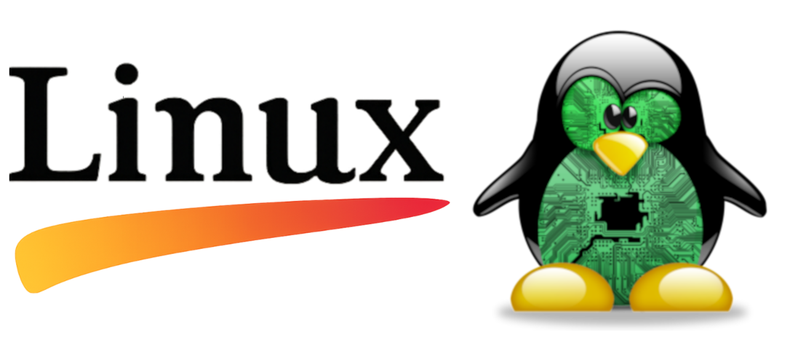
Linux İşletim Sistemi
Son güncelleme : 04/2026
İçindekiler
▸ Komut Satırı
▸ Metin İşlemleri
▸ Gelişmiş Metin İşlemleri
▸ Kullanıcı Yönetimi
▸ İzinler
▸ İşlem Yönetimi
▸ Servis Yönetimi ve Zamanlanmış Görevler
📅 Tarihçe
Linux'un nasıl ortaya çıktığını öğrenmek için, 1969'a, Ken Thompson ve Dennis Ritchie'nin Bell Laboratuvarlarında UNIX işletim sistemini geliştirdikleri zamana dönelim. Daha sonra taşınabilirliği artırmak için C dilinde yeniden yazıldı ve sonunda yaygın olarak kullanılan bir işletim sistemi haline geldi. Fakat UNIX işletim sistemi lisans ücreti talep ediyordu.
Yaklaşık on yıl sonra, Richard Stallman, GNU (GNU, UNIX Değildir) projesi üzerinde çalışmaya başladı. Bu proje kapsamında Hurd adında bir GNU çekirdeği geliştirildi, ancak maalesef asla tamamlanmadı. Bunun sonucu olarak, özgür yazılım lisansı olan GNU Genel Kamu Lisansı (GPL) de oluşturuldu.
Çekirdek, işletim sisteminin en önemli parçasıdır. Donanımın yazılımla iletişim kurmasını sağlar. Biz kullanıcılar sistemde bulunan yazılımlar ile çekirdeğe emirler veririz, çekirdekde donanıma o işi yaptırır. Çekirdek sisteminizde olup biten her şeyi kontrol eder.
Bu dönemde BSD, MINIX vb. gibi diğer UNIX benzeri sistemler geliştirildi. Ancak, tüm bu UNIX benzeri sistemlerin ortak noktası, tek bir çekirdek eksikliğiydi.
Ardından 1991'de Linus Torvalds adında genç bir adam, bugün bildiğimiz Linux çekirdeğini geliştirmeye başladı. Topluluğa sunulması ile Linux çekirdeği dahada geliştirildi.
Sonuç olarak Linux çekirdeğinin GPL lisansına geçişiyle birlikte, GNU projesinin halihazırda sahip olduğu açık kaynaklı özgür yazılım araçları ve topluluk desteği, ortaya açık kaynaklı ve özgür bir işletim sistemi olan “GNU Linux” işletim sistemini çıkarmıştı. GNU’nun eksik olan çekirdeği, Linux çekirdeğinin de eksik olan işletim sistemi araçları birbirini tamamlayarak açık kaynaklı özgür bir işletim sistemi oluşturdu.
🔥 Linux Dağıtımları
Bir Linux sistemi üç ana bölümden oluşur:
Donanım: Bu, sisteminizin çalıştığı tüm donanımları, bellek, CPU, diskler vb. içerir.
Linux Çekirdeği: Yukarıda belirttiğimiz gibi, çekirdek işletim sisteminin merkezidir. Donanımı yönetir ve sistemle nasıl etkileşim kuracağını söyler. Çekirdek dediğimiz yapının, yazılım olduğu unutulmamalıdır.
Kullanıcı Alanı: Bu, bizler gibi kullanıcıların çeşitli yazımlar ile doğrudan sistemle etkileşim kuracağı yerdir.
Seçilebilecek birçok Linux dağıtımı vardır, sadece en popüler seçeneklere göz atacağız.
» Debian Dağıtımı
Genel Bakış
Debian, tamamen özgür ve açık kaynaklı yazılımlardan oluşan bir işletim sistemidir. Geniş çapta bilinen ve 20 yılı aşkın süredir geliştirilmektedir. Kullanabileceğiniz üç ana sürümü vardır: Stable ( kararlı), Testing (test ) ve Unstable (kararsız).
Sürümler
Stable: Genel olarak kullanılması iyi olan bir sürüm. Sisteminizde kararlılık ve güvenlik öncelikliyse bu sürümü tercih edebilirsiniz. Testing ve Unstable: Sürekli güncelleme (rolling release) alan dallardır. Bu, bu dallardaki aşamalı değişikliklerin sonunda Stable sürümüne dahil olacağı anlamına gelir. Örneğin, Windows XP'den Windows 10'a yükseltme yapmak istiyorsanız, tam bir Windows 10 kurulumu yapmanız gerekir. Ancak Testing sürümünü kullanıyorsanız, tam bir kurulum yapmadan bir sonraki işletim sistemi sürümü olana kadar otomatik olarak güncellemeleri alacaksınız.
Paket Yönetimi
Debian, kendi paket yönetim (APT) araçlarını kullanır. Her Linux dağıtımı paketleri farklı şekilde kurar, yönetir ve farklı paket yönetim araçları kullanır.
Yapılandırılabilirlik
Debian en son güncellemeleri almasa da son derece kararlıdır. İyi bir "temel" işletim sistemi arıyorsanız, bu sizin için doğru tercih olabilir.
Kullanım Alanları
Debian, her platform için genel olarak harika bir işletim sistemidir.
» Red Hat Enterprise Linux Dağıtımı
Genel Bakış
Red Hat Enterprise Linux, genellikle RHEL olarak adlandırılır ve Red Hat tarafından geliştirilir. RHEL, ücretsiz yeniden dağıtımı kısıtlamak için katı kurallara sahiptir, ancak yine de kaynak kodunu ücretsiz olarak sağlar.
Paket Yönetimi
RHEL, Debian'dan farklı bir paket yöneticisi olan RPM paket yöneticisini kullanır.
Yapılandırılabilirlik
RHEL tabanlı işletim sistemleri, Debian tabanlı işletim sistemlerinden biraz farklılık gösterecek, özellikle paket yönetiminde daha belirgin olacaktır.
Kullanım Alanları
Adından da anlaşılacağı gibi, çoğunlukla kurumsal alanda kullanılır, bu nedenle sağlam bir sunucu işletim sistemine ihtiyacınız varsa bu iyi bir tercih olacaktır.
» Ubuntu Dağıtımı
Genel Bakış
Kişisel bilgisayarlar için en popüler Linux dağıtımlarından biri Ubuntu'dur. Ubuntu ayrıca varsayılan olarak kendi masaüstü ortamı yöneticisi Unity'yi yayınlar.
Paket Yönetimi
Ubuntu, Canonical tarafından geliştirilen Debian tabanlı bir işletim sistemidir. Dolayısıyla temel olarak Debian paket yönetim sistemini kullanır.
Yapılandırılabilirlik
Linux'a başlamak isteyen yeni başlayanlar için Ubuntu harika bir seçimdir. Ubuntu, kullanıcı dostu arayüzü ve geniş çapta benimsenilmesine yol açan kullanım kolaylığı sunar. Yaygın olarak kullanılmakta ve desteklenmektedir ve kullanılabilirlik açısından diğer işletim sistemleri gibi OSX ve Windows'a en çok benzerlik gösterir.
Kullanım Alanları
Masaüstü, dizüstü bilgisayar ve sunucu dahil olmak üzere her platform için uygundur.
» Fedora Dağıtımı
Genel Bakış
Red Hat tarafından desteklenen Fedora Projesi, açık kaynaklı ve ücretsiz yazılımları içeren, topluluk odaklı bir projedir. Red Hat Enterprise Linux, Fedora'dan dallanarak geliştirilir, bu nedenle Fedora'yı bir upstream RHEL işletim sistemi olarak düşünebilirsiniz. Sonuç olarak, Red Hat Enterprise Linux, kapsamlı test ve kalite güvencesinden sonra Fedora'dan güncellemeler alacaktır. Fedora'yı, Debian yerine Red Hat altyapısı kullanan bir Ubuntu eşdeğeri olarak düşünebilirsiniz.
Paket Yönetimi
Fedora, Red Hat paket yöneticisini kullanır.
Yapılandırılabilirlik
Red Hat tabanlı bir işletim sistemi kullanmak istiyorsanız, bu kullanıcı dostu bir versiyondur.
Kullanım Alanları
Fedora, Red Hat tabanlı bir işletim sistemini fiyat etiketi olmadan kullanmak istiyorsanız harika bir seçimdir. Masaüstü ve dizüstü bilgisayarlar için önerilir.
» Linux Mint Dağıtımı
Genel Bakış
Linux Mint, Ubuntu tabanlı bir işletim sistemidir. Ubuntu'nun yazılım depolarını kullanır, böylece her iki dağıtımda da aynı paketler kullanılabilir. Ubuntu'dan daha hafif bir dağıtım tercih ediyorsanız, Linux Mint ilginizi çekebilir.
Paket Yönetimi
Linux Mint, Ubuntu tabanlı olduğundan Debian paket yöneticisini kullanır.
Yapılandırılabilirlik
Harika bir kullanıcı arayüzü sunar, yeni başlayanlar için uygundur ve Ubuntu'dan daha az gereksiz yazılım içerir.
Kullanım Alanları
Masaüstü ve dizüstü bilgisayarlar için uygundur.
» Arch Linux Dağıtımı
Genel Bakış
Arch Linux, %100 topluluk tarafından yönetilen, hafif ve esnek bir Linux dağıtımdır. Debian'a benzer şekilde, Arch da sürekli güncelleme modelini (rolling release) kullanır, bu nedenle kademeli güncellemeler sonunda Stable (kararlı) sürüm haline gelir. Sistemi ve işlevlerini anlamak için gerçekten uygulamalı olarak öğrenmeniz gerekir, ancak karşılığında sisteminiz üzerinde tam ve eksiksiz kontrol elde edersiniz.
Paket Yönetimi
Paketleri kurmak, güncellemek ve yönetmek için kendi paket yöneticisi Pacman'ı kullanır.
Yapılandırılabilirlik
Hafif bir işletim sistemi istiyor ve Linux'u gerçekten anlamak istiyorsanız Arch'ı kullanın! Biraz öğrenme eğrisi olsa da, hardcore Linux kullanıcıları için harika bir seçimdir.
Kullanım Alanları
Masaüstü ve dizüstü bilgisayarlar için uygundur. Ayrıca Raspberry Pi gibi küçük bir cihazınız varsa ve üzerine hafif bir işletim sistemi kurmanız gerekiyorsa, Arch'ı tercih edebilirsiniz.
» openSUSE Dağıtımı
Genel Bakış
openSUSE Linux, tüm dünyadaki Özgür ve Açık Kaynaklı Yazılım topluluğunun bir parçası olarak açık, şeffaf ve dostça bir şekilde birlikte çalışan openSUSE Projesi tarafından yaratılmıştır. openSUSE, halen çalışmakta olan ikinci en eski Linux dağıtımıdır ve ödüllü SUSE Linux Enterprise ürünleriyle taban sistemini paylaşır.
Paket Yönetimi
RPM paket yöneticisini kullanır.
Kullanılabilirlik
openSUSE, yeni bir Linux kullanıcısı için harika bir seçimdir. Kullanımı kolay bir grafiksel kurulum/yönetim uygulaması (YaST) ve düzenli bir temel sistem sunar, kurcalamaya kolay açıktır. openSUSE, ister fotoğraflarınız, videolarınız, müzikleriniz ister kodunuz olsun, İnternet'in keyfini virüslerden/casus yazılımlardan endişe duymadan çıkarmanız ve yaratıcılığınızı ortaya koymanız için ihtiyacınız olan her şeyi içerir.
Kullanım Alanları
openSUSE Leap, masaüstü PC ve dizüstü bilgisayarda kullanıma tamamen uygundur.
💻 Komut Satırı
🔼 Başa Dön
Kabuk (Shell)
Kabuk, temelde klavyenizden komutlarınızı alıp bunları işletim sistemine göndererek gerçekleştirilmesini sağlayan bir programdır. Daha önce bir GUI (grafiksel arayüz) kullandıysanız, "Terminal" veya "Konsol" gibi progralları görmüşsünüzdür. Bunlar sizin için bir kabuk başlatan programlardır.
Bu belgede kabuk programı bash (Bourne Again SHell) kullanacağız, hemen hemen tüm Linux dağıtımları varsayılan olarak bash kabuğunu kullanır. ksh, zsh, tsch gibi başka kabuklar da mevcuttur, ancak en çok kullanılan kabuk programı bash'dir. chsh -s [kabuk-adı] komutu ile kabuğu değiştirebiliriz. (örneğin chsh -s /usr/bin/bash)
Varsayılan kabuk programını öğrenmek için konsola echo $SHELL komutunu girmeniz yeterli. Bu komutta yer alan echo ifadesi varsayılan kabuğun değerini tutan SHELL değişkenini konsola bastırmanızı sağlıyor.
xxxxxxxxxx┌──(ahmet㉿kali)-[~]└─$ echo $SHELL/usr/bin/bashTemelde bizler kabuğa iki tür komut girebiliyoruz. Bu türler “dahili” ve “harici” olarak gruplanmış olan komutlardır.
Dahili Komutlar(Built-ins)
Dahili komutlar, kabuk programında yerleşik olan araçları çalıştırmak üzere kullanılan komutlardır. Bash üzerinde yer alan tüm dahili komutları görmek için compgen -b komutunu kullanabiliriz.
Harici Komutlar(External)
Harici komutlar ise, mevcut sistem üzerinde yüklü bulunan araçları çalıştırmamızı sağlayan komutlardır. Tabii ki bu tür komutlar harici olan araçları temsil eden komutlar olduğu için kullanmakta olduğunuz sisteme göre harici komutlar değişiklik gösterir. Örneğin siz komut satırı üzerinden metinleri düzenleyebilmenizi sağlayacak olan nano aracını çalıştırmak üzere kabuğa aracın ismini girdiğinizde eğer araç sistemde yüklü ise açılır. Eğer yüklü değilse komut yok hatası alırsınız. İşte burada girdiğiniz nano komutu harici bir komut olarak kabul ediliyor. Çünkü nano aracı bash kabuğunun içinde yüklü gelen bir araç değil, nano aracı harici olarak sisteme yüklenmiş olan bir metin editörü yazılımıdır.
Genel görünümü (promt) aşağıdaki gibidir.
xxxxxxxxxxkullanıcı_adı@bilgisayar_adı:su_anki_dizin $
ali@pc:/home/ali/İndirilenler $Kullandığınız dağıtıma göre promt görünümü değişebilir.Örneğin kali linux dağıtımında promt görünümü aşağıdaki gibidir:
xxxxxxxxxx┌──(ahmet㉿kali)-[/home/ali/İndirilenler]└─$ Promptun sonundaki $ sembolü Bash, Bourne veya Korn kabuğunu kullanan normal bir kullanıcı içindir, komutu yazarken bu sembol eklenmez.
echo komutu, kendisine verilen metin argümanlarını ekrana yazdırır.
xxxxxxxxxx┌──(ahmet㉿kali)-[~]└─$ echo Linux İşletim SistemiLinux İşletim SistemiKabuğun bizim girdiğimiz komutları nasıl algıladığından bahsedecek olursak, örneğin sistem üzerinde dosyaları ve dizinleri bulma işi yapan find aracının PATH yolundaki dizinlerde bulunup bulunmadığı kontrol edilir.
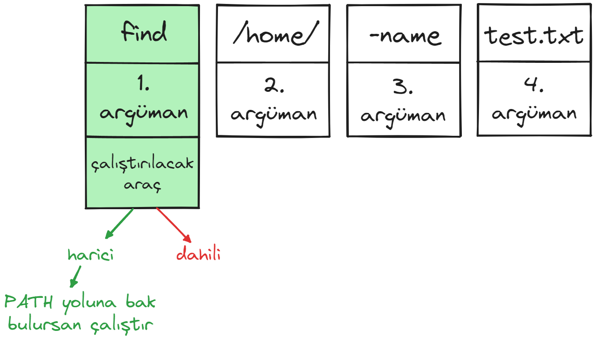
Kabuğa girdiğimiz komutlar path yolundaki dizinlerde bulunması gerekir.
PATH Yolu
PATH, kabuk (bash, zsh vb.) tarafından çalıştırılabilir dosyaların aranacağı dizinleri tutan ortam değişkenidir. Bir komutu tam yolunu yazmadan çalıştırabilmenizi sağlar.
xxxxxxxxxx$ echo $PATH/usr/local/sbin:/usr/sbin:/sbin:/usr/local/bin:/usr/bin:/bin:/usr/local/gamesBurada gördüğümüz iki nokta işareti ile ayrılmış olan her bir dizin adresi, kabuğun bir aracın çalıştırılabilir dosyasını ararken soldan sağa doğru sırasıyla bakacağı dizinlerin adresidir.
PATH’e Geçici Dizin Ekleme (oturumluk)
Sadece açık terminal oturumu için geçerlidir.
xxxxxxxxxxexport PATH="$PATH:/home/ali/Belgeler/bin"Terminal kapandığında geçersiz olur.
PATH’e Kalıcı Dizin Ekleme (kullanıcı bazlı)
Kullanıcının her oturumunda geçerli olur.
xxxxxxxxxxnano ~/.bashrcDosyanın sonuna aşağıdaki kodu ekle:
xxxxxxxxxxexport PATH="$PATH:/home/ali/Belgeler/bin"Ardından:
xxxxxxxxxxsource ~/.bashrcSistem Geneli PATH Ekleme (tüm kullanıcılar)
Tüm kullanıcılar için geçerli olur.
xxxxxxxxxxsudo nano /etc/profileEkleme örneği:
xxxxxxxxxxPATH="$PATH:/home/ali/Belgeler/bin"Özet:
PATH: Komutların arandığı dizinlerin listesi
export PATH=$PATH: ... güncelleme,
~/.bashrc: Kullanıcıya özel,
/etc/profile veya /etc/bash.bashrc : Sistem geneli için.
Eklenen dizini kontrol etmek için:
xxxxxxxxxx$ echo $PATH/home/ali/Belgeler/bin:/usr/local/sbin:/usr/sbin:/sbin:/usr/local/bin:/usr/bin:/bin:/usr/local/gamespwd (Print Working Directory / Çalışma Dizini Yazdır)
Linux'ta her şey bir dosyadır, Linux'u derinlemesine öğrendikçe bunu anlayacaksınız, ancak şimdilik sadece bunu aklınızda bulundurun. Her dosya, hiyerarşik bir dizin ağacında organize edilir. Dosya sistemindeki ilk dizin, kök dizin olarak adlandırılır. Kök dizinde, daha fazla klasör ve dosya depolayabileceğiniz birçok klasör ve dosya bulunur. Bu dosya ve dizinlerin konumları yollar olarak adlandırılır.
Nerede olduğunuzu görmek için pwd komutunu kullanabilirsiniz, bu komut "çalışma dizinini yazdır" anlamına gelir ve yalnızca hangi dizinde olduğunuzu gösterir, yolun kök dizinden geldiğini unutmayın.
xxxxxxxxxx┌──(ahmet㉿kali)-[~]└─$ pwd/home/ahmetLinux’ta tüm dosya ve dizinler “root” olarak ifade edilen “kök” dizini altında hiyerarşik şekilde tutuluyor. Kök dizin de "/ (slash)" işareti ile temsil ediliyor.
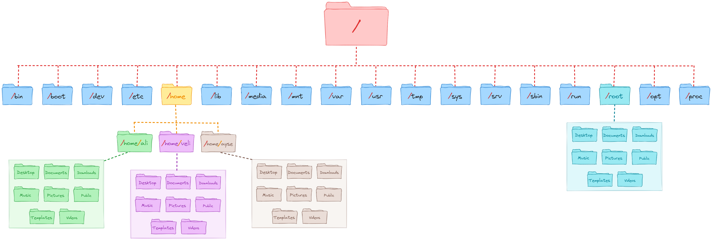
Gördüğünüz gibi tüm dizinler / işareti ile temsil edilen kök dizinin altında bulunuyor.
cd (Change Directory / Dizin Değiştir)
Dizinlerde gezinmek için “change directory” yani “dizini değiştirme” ifadesinin kısaltmasından gelen cd komutunu kullanabiliyoruz. Dosya sisteminde gezinmek için yolları kullanmamız gerekiyor. Yol belirtmenin kesin (mutlak) ve göreli olmak üzere iki farklı yolu vardır.
Kesin yol “absolute path”: Bu, kök dizinden itibaren olan yoldur. Kök dizin genellikle bir eğik çizgi "/" olarak gösterilir. Yolunuz her zaman kök "/" ile başladığında, kök dizinden başladığınız anlamına gelir. Örneğin, /home/ali/Masaüstü kök ile başladığı için kesin yol oluyor.
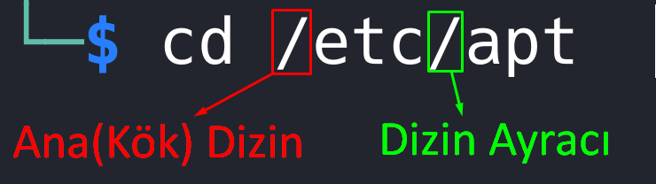
Göreli yol “relative path”: Bu, dosya sistemindeki bulunduğunuz konumdan itibaren olan yoldur. Eğer /home/ali/Dökümanlar konumunda olsaydım ve Dökümanlar içinde vergiler adında bir dizine gitmek isteseydim, /home/ali/Dökümanlar/vergiler gibi kök dizinden başlayarak tüm yolu belirtmeme gerek yok, bunun yerine sadece cd komutuna vergiler/ argümanını verip ilgili dizinine gidebilirim.
İstediğimiz dizine geçmek için cd "dizin değiştir" komutuna gitmek istediğimiz dizin adını argüman olarak verilir.
xxxxxxxxxx┌──(ahmet㉿kali)-[~]└─$ cd /home/ali/Resimler/
┌──(ahmet㉿kali)-[/home/ali/Resimler]└─$ Böylece şimdi dizin konumumu /home/ali/Resimler olarak değiştirdik.
Şimdi bu dizinden Linux adında bir klasörüm var, şu şekilde o klasöre gidebilirim:
xxxxxxxxxx┌──(ahmet㉿kali)-[/home/ali/Resimler]└─$ cd Linux/
┌──(ahmet㉿kali)-[/home/ali/Resimler/Linux]└─$ Sadece klasörün adını argüman olarak verdik, çünkü zaten /home/ali/Resimler konumundaydık.
Mutlak ve göreli yollarla gezinmek için size yardımcı olacak bazı kısayollar vardır.
► . (geçerli dizin): Şu anda bulunduğunuz dizindir.
► .. (üst dizin): Sizi şu anki konumunuzun bir üst dizinine götürür.
► ~ (ana dizin): Bu dizin varsayılan olarak "ana dizininize" (/home/kullanıcı_adı) gider.
► - (önceki dizin): Bu sizi az önce bulunduğunuz önceki dizine götürür.
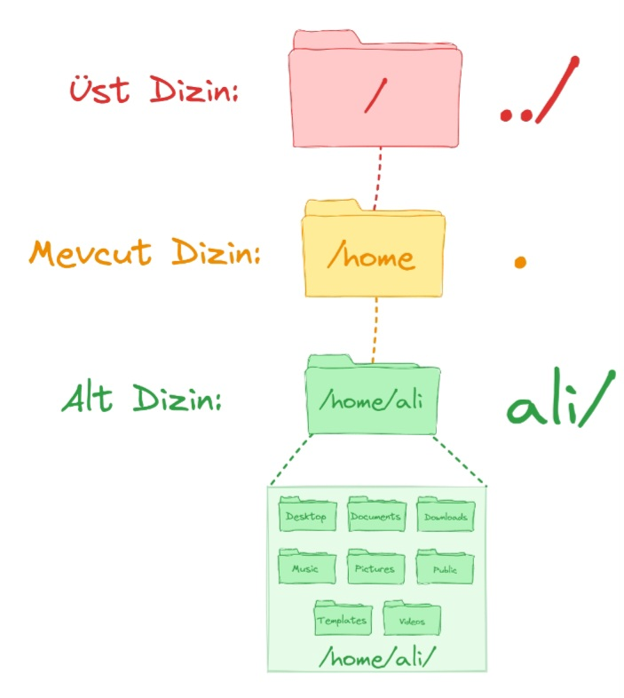
Örnekler:
xxxxxxxxxx$ cd . # geçerli dizinde kal
$ cd .. # bir üst dizine git
$ cd ~ # ana dizine git (sadece cd komutuda yeterlidir)
$ cd - # önceki dizine git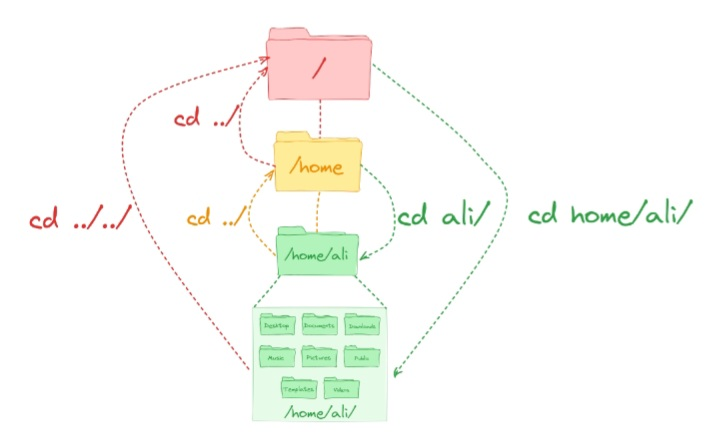
ls (List Directories)
Dizin içeriklerini listelemek için ls komutunu kullanabiliriz. ls komutu varsayılan olarak geçerli dizindeki dizinleri ve dosyaları listeler.
xxxxxxxxxx┌──(ahmet㉿kali)-[~/Resimler]└─$ ls'Ekran Görüntüleri' 'Git Resimleri' linux-distribution.png source-code.jpg veritabanı.jpgAncak hangi dizinini listelemek istediğinizi belirtebilirsiniz.
xxxxxxxxxx┌──(ahmet㉿kali)-[~/Resimler]└─$ ls /home/ali/Belgeler Genel İndirilenler Masaüstü Müzik Resimler Şablonlar VideolarNokta ile başlayan dosya adları gizlidir, ancak bunları ls komutuyla görebilirsiniz ve -a (tümü için all) işaretini ekleyebilirsiniz.
xxxxxxxxxx┌──(ahmet㉿kali)-[~]└─$ ls -a . .cache .gtkrc-2.0 .pki .swt .. .codeintel İndirilenler .profile Şablonlar .atom .config .ipython .psql_history .var .bash_history .eclipse .java pycharm-2025.3 Videolar .bash_logout .face .junie PyCharmMiscProject .viminfo .bashrc .face.icon .local Python-3.14.2 .zoom .bashrc.original Genel Masaüstü .python_history .zprofile Belgeler .gitconfig metin.txt Resimler .zsh_history .biglybt .gnupg .mozilla .ssh .zshrc'BiglyBT Downloads' GNUstep MüzikBir başka ls işareti, -l uzun formatta ayrıntılı bir dosya listesi gösterir. Bu size ayrıntılı bilgi gösterecektir, soldan başlayarak: dosya izinleri, bağlantı sayısı, sahip adı, sahip grubu, dosya boyutu, son değişiklik zaman damgası ve dosya/dizin adı.
xxxxxxxxxx┌──(ahmet㉿kali)-[~]└─$ ls -ltoplam 56drwxr-xrwx 2 ahmet ahmet 4096 Oca 12 16:55 Belgelerdrwxrwxrwx 2 ahmet ahmet 4096 Ara 1 12:28 'BiglyBT Downloads'drwxr-xrwx 2 ahmet ahmet 4096 Kas 25 13:35 Geneldrwxrwxr-x 4 ahmet ahmet 4096 Ara 1 13:08 GNUstepdrwxr-xrwx 3 ahmet ahmet 4096 Oca 15 17:26 İndirilenlerdrwxr-xrwx 13 ahmet ahmet 4096 Oca 16 21:53 Masaüstü-rw-rw-r-- 1 ahmet ahmet 24 Oca 16 22:28 metin.txtdrwxr-xrwx 2 ahmet ahmet 4096 Kas 25 13:35 Müzikdrwxr-xr-x 10 ahmet ahmet 4096 Oca 21 1970 pycharm-2025.3drwxrwxr-x 4 ahmet ahmet 4096 Ara 16 12:38 PyCharmMiscProjectdrwxrwxr-x 6 ahmet ahmet 4096 Oca 14 21:02 Python-3.14.2drwxr-xrwx 4 ahmet ahmet 4096 Oca 17 16:55 Resimlerdrwxr-xrwx 2 ahmet ahmet 4096 Kas 25 13:35 Şablonlardrwxr-xrwx 3 ahmet ahmet 4096 Ara 5 22:23 VideolarSık kullanılan argümanlar
-l
Uzun listeleme formatı (izinler, sahip, grup, boyut, tarih).
xxxxxxxxxx┌──(ahmet㉿kali)-[~]└─$ ls -ltoplam 29584drwxr-xrwx 2 ahmet ahmet 4096 Oca 19 15:37 Belgelerdrwxr-xrwx 2 ahmet ahmet 4096 Kas 25 13:35 Geneldrwxrwxr-x 4 ahmet ahmet 4096 Ara 1 13:08 GNUstepdrwxr-xrwx 2 ahmet ahmet 4096 Oca 20 12:50 İndirilenler-rw-rw-r-- 1 ahmet ahmet 1728252 Kas 29 12:42 kali-abstract-sky.png-rw-rw-r-- 1 ahmet ahmet 715087 Kas 29 12:39 kali-ferrofluid.jpg-rw-rw-r-- 1 ahmet ahmet 2377119 Kas 29 12:42 kali-layers.pngdrwxr-xrwx 13 ahmet ahmet 4096 Oca 20 12:30 Masaüstü-rw-rw-r-- 1 ahmet ahmet 24 Oca 16 22:28 metin.txtdrwxr-xrwx 2 ahmet ahmet 4096 Kas 25 13:35 Müzik-rwxr----- 1 ahmet ahmet 8342944 Tem 22 16:49 'Program Kurma (Kaynak Koddan).mp4'drwxr-xr-x 10 ahmet ahmet 4096 Oca 21 1970 pycharm-2025.3drwxrwxr-x 4 ahmet ahmet 4096 Ara 16 12:38 PyCharmMiscProjectdrwxrwxr-x 6 ahmet ahmet 4096 Oca 14 21:02 Python-3.14.2drwxr-xrwx 4 ahmet ahmet 4096 Oca 18 21:00 Resimler-rwxr----- 1 ahmet ahmet 17064180 Tem 22 16:49 'Süreçler (ps_ pstree_ kill_ killall).mp4'-h
Dosya boyutlarını insan okunabilir biçimde gösterir (KB, MB, GB).
Genellikle -l ile birlikte kullanılır.
xxxxxxxxxx┌──(ahmet㉿kali)-[~]└─$ ls -lhtoplam 29Mdrwxr-xrwx 2 ahmet ahmet 4,0K Oca 19 15:37 Belgelerdrwxr-xrwx 2 ahmet ahmet 4,0K Oca 20 12:50 İndirilenler-rw-rw-r-- 1 ahmet ahmet 1,7M Kas 29 12:42 kali-abstract-sky.png-rw-rw-r-- 1 ahmet ahmet 699K Kas 29 12:39 kali-ferrofluid.jpg-rw-rw-r-- 1 ahmet ahmet 2,3M Kas 29 12:42 kali-layers.pngdrwxr-xrwx 13 ahmet ahmet 4,0K Oca 20 12:30 Masaüstü-rw-rw-r-- 1 ahmet ahmet 24 Oca 16 22:28 metin.txtdrwxr-xrwx 2 ahmet ahmet 4,0K Kas 25 13:35 Müzik-rwxr----- 1 ahmet ahmet 8,0M Tem 22 16:49 'Program Kurma (Kaynak Koddan).mp4'drwxr-xr-x 10 ahmet ahmet 4,0K Oca 21 1970 pycharm-2025.3drwxrwxr-x 4 ahmet ahmet 4,0K Ara 16 12:38 PyCharmMiscProjectdrwxrwxr-x 6 ahmet ahmet 4,0K Oca 14 21:02 Python-3.14.2drwxr-xrwx 4 ahmet ahmet 4,0K Oca 18 21:00 Resimler-rwxr----- 1 ahmet ahmet 17M Tem 22 16:49 'Süreçler (ps_ pstree_ kill_ killall).mp4'drwxr-xrwx 2 ahmet ahmet 4,0K Kas 25 13:35 Şablonlardrwxr-xrwx 3 ahmet ahmet 4,0K Ara 5 22:23 Videolar-a
Gizli dosyaları da listeler (. ile başlayanlar).
xxxxxxxxxxls -a-A
Gizli dosyaları listeler ancak . ve .. hariç tutar.
xxxxxxxxxxls -ASıralama Seçenekleri
-t
Dosyaları son değiştirilme zamanına göre sıralar.
xxxxxxxxxxls -lt-S
Dosyaları boyutlarına göre sıralar.
xxxxxxxxxxls -lS-r
Ters sıralama yapar.
xxxxxxxxxxls -ltrDosya Türleri ve Ayırt Etme
-FDosya türünü sonuna ek işaretle belirtir:/→ dizin*→ çalıştırılabilir dosya@→ sembolik link
xxxxxxxxxxls -F--color=auto
Dosya türlerine göre renklendirerek gösterir (çoğu dağıtımda varsayılan).
xxxxxxxxxxls --color=autoDizin ve Alt Dizin İşlemleri
-d
Dizinin içeriğini değil, dizinin kendisini listeler.
xxxxxxxxxxls -ld /etc-R
Alt dizinlerle birlikte recursive (özyinelemeli) listeleme yapar.
xxxxxxxxxxls -RZaman Bilgileri
-u
Son erişim zamanına göre listeler.
xxxxxxxxxxls -lu-c
Son durum değişikliği zamanına göre listeler.
xxxxxxxxxxls -lcYaygın Kullanım Kombinasyonları
ls -lahTüm dosyalar, detaylı liste, okunabilir boyutlar.ls -ltrhEn eski dosyalar üstte olacak şekilde detaylı ve okunabilir liste.ls -ld */Sadece dizinleri uzun formatta listeler.
Kısa Özet Tablosu
| Argüman | Açıklama |
|---|---|
-l | Detaylı liste |
-a | Gizli dosyalar |
-h | Okunabilir boyut |
-t | Zamana göre sıralama |
-r | Ters sıralama |
-S | Boyuta göre sıralama |
-R | Alt dizinlerle |
-F | Dosya türü işareti |
-d | Dizinin kendisini gösterir |
touch
Touch, yeni boş dosyalar oluşturmanıza olanak tanır.
xxxxxxxxxx$ touch <dosya>Touch ayrıca mevcut dosya ve dizinlerde zaman damgalarını değiştirmek için kullanılır. Bir dosyadals -l komutunu kullanın ve zaman damgasını not edin, ardından o dosyaya touch komutunu uygulayın, zaman damgası güncellenecektir.
file
Bir dosyanın ne tür bir dosya olduğunu bulmak için file komutunu kullanabilirsiniz. Bu komut, dosyanın içeriğinin bir açıklamasını size gösterecektir.
xxxxxxxxxx┌──(ahmet㉿kali)-[~/Resimler]└─$ file man-image.gif man-image.gif: GIF image data, version 89a, 807 x 662Linux'ta, dosya adlarının dosyanın içeriğini temsil etmesi gerekmez. Aslında GIF olmayan linux-distribution.gif adında bir dosya oluşturabilirsiniz. Bu onun bi GIF dosyası olduğu anlamına gelmez.
xxxxxxxxxx┌──(ahmet㉿kali)-[~/Resimler]└─$ file linux-distribution.gif linux-distribution.gif: PNG image data, 2000 x 2416, 8-bit/color RGBA, non-interlacedcat
Dosya okumak için kullanılır. Bu komut, concatenate (birleştirmek) kelimesinin kısaltmasıdır.
xxxxxxxxxx┌──(ahmet㉿kali)-[~/Belgeler]└─$ cat Notlar.txt ==== NOTLAR ===Python'u öğrenirken ilerlemenin en iyi yolları.
┌──(ahmet㉿kali)-[~/Belgeler]└─$ cat Komutlar.txt === Komutlar ===[#] pwd : Bulunduğumuz dizinin tam adresini yazdırır.[#] ls : Dizin içeriklerini listelemek için kullanılır.Yalnızca dosya içeriğini görüntülemez, aynı zamanda birden fazla dosyayı birleştirebilir ve size çıktıları gösterebilir.
xxxxxxxxxx┌──(ahmet㉿kali)-[~/Belgeler]└─$ cat Notlar.txt Komutlar.txt ==== NOTLAR ===Python'u öğrenirken ilerlemenin en iyi yolları.=== Komutlar ===[#] pwd : Bulunduğumuz dizinin tam adresini yazdırır.[#] ls : Dizin içeriklerini listelemek için kullanılır.Dosyaları birleştirmek ve içeriği dosyaya yazdırmak içinde kullanabilirsiniz.
xxxxxxxxxx┌──(ahmet㉿kali)-[~/Belgeler]└─$ cat Notlar.txt Komutlar.txt > Birlesimi.txt
┌──(ahmet㉿kali)-[~/Belgeler]└─$ cat Birlesimi.txt ==== NOTLAR ===Python'u öğrenirken ilerlemenin en iyi yolları.=== Komutlar ===[#] pwd : Bulunduğumuz dizinin tam adresini yazdırır.[#] ls : Dizin içeriklerini listelemek için kullanılır.Ancak büyük dosyaları görüntülemek için pek uygun değildir ve yalnızca kısa içerikler için kullanılır.
less
Basit çıktılardan daha büyük metin dosyaları görüntüleyecekseniz, "az daha fazladır" (aslında benzer bir şey yapan more adında bir komut vardır). Metin, sayfa sayfa görüntülenir, böylece bir metin dosyasında sayfa sayfa gezinebilirsiniz.
Devam edin ve bir dosyanın içeriğine less komutu ile bakın. less komutundayken, dosyada gezinmek için diğer klavye komutlarını kullanabilirsiniz.
xxxxxxxxxx$ less /home/ali/Dökümanlar/metin1 less içinde gezinmek için aşağıdaki komutlar kullanılır:
q -
lessprogramından çıkıp komut satırına geri dönmek için kullanılır.Sayfa yukarı, Sayfa aşağı, Yukarı ve Aşağı okları - Ok tuşları ve sayfa tuşlarını kullanarak gezinin.
g - Metin dosyasının başına gitmek için kullanılır.
G - Metin dosyasının sonuna gitmek için kullanılır.
/arama - Metin belgesinin içinde belirli metinleri arayabilirsiniz. Aramak istediğiniz kelimelerin öncesine / işareti ekleyin.
h -
lessprogramını kullanırken nasıl kullanılacağı hakkında biraz yardıma ihtiyacınız varsa,hözniteliğini kullanarak yardım ekranına erişebilirsiniz.
history
Kabukta, daha önce girdiğiniz komutların bir geçmişi vardır, aslında bu komutlara göz atabilirsiniz. Bu, daha önce kullandığınız bir komutu yeniden yazmadan bulup çalıştırmak istediğinizde oldukça faydalıdır.
Komut geçmişinizi görmek:
xxxxxxxxxx$ historyÖnceki komutu tekrar çalıştırmak: Yukarı ok tuşuna basın.
Son komutu tekrar çalıştırmak:
xxxxxxxxxx!!Örneğin, cat dosya1 yazdıysanız ve tekrar çalıştırmak istiyorsanız, sadece !! yazıp Enter'a basabilirsiniz. Bu, en son çalıştırdığınız komutu çalıştıracaktır.
Ters arama:
Ctrl-Rtuşlarına birlikte basın. Bu, ters arama komutudur.Ctrl-R'ye basıp aradığınız komutun bir kısmını yazmaya başlarsanız, size eşleşmeleri gösterecektir. Yön tuşları ile bunlar arasında gezinebilirsiniz. Kullanmak istediğiniz komutu bulduktan sonra Enter tuşuna basmanız yeterlidir.Ekranı temizleme:
xxxxxxxxxx$ clearTab tuşu ile tamamlama: Komut satırı ortamında en kullanışlı özelliklerden biri tab tuşu ile tamamlamadır. Bir komutun, dosyanın, dizinin vb. başlangıcını yazmaya başlarsanız ve Tab tuşuna basarsanız, bulunduğuz dizinde bulduğu şeye göre otomatik tamamlama yapacaktır. Örneğin,
chromekomutunu çalıştırmaya çalışıyorsanız,chryazıp Tab tuşuna basabilirsiniz, otomatik olarakchrometamamlanacaktır.
cp (Copy)
Kabuk üzerine dosya yada dizin kopyalamak için kullanılır.
Tek bir dosya kopyalama:
xxxxxxxxxx$ cp <kopyalanacak_dosya> <hedef_konum>kopyalanacak_dosya kopyalamak istediğiniz dosyadır ve hedef_konum dosyayı kopyaladığınız yerdir.
Örnek:
xxxxxxxxxx$ cp metin.txt /home/ali/Dökümanlar/Bu komut, metin.txt adlı dosyayı /home/ali/Dökümanlar/ dizinine kopyalar.
Çoklu dosya ve dizin kopyalama:
Birden fazla dosya ve dizini kopyalayabilirsiniz ve ayrıca joker karakterleri de kullanabilirsiniz. Joker karakter, arama için daha fazla esneklik kazandıran bir desen tabanlı seçimi temsil eden bir karakterdir. Daha fazla esneklik için her komutta joker karakterleri kullanabilirsiniz.
Joker karakterler:
*: Tüm tek karakterleri veya herhangi bir dizeyi temsil eder.?: Tek bir karakteri temsil eder.[]: Köşeli parantez içinde yer alan herhangi bir karakteri temsil eder.
Örnek:
xxxxxxxxxx$ cp *.jpg /home/ali/ResimlerBu komut, geçerli dizininizdeki tüm .jpg uzantılı dosyaları Resimler dizinine kopyalar.
Yinelenen dizin kopyalama:
Yararlı bir komut, -r (recursive, yinelenen) işaretini kullanmaktır. Bu, bir dizin içindeki dosyaları ve dizinleri yinelemeli olarak kopyalar.
Örnek:
xxxxxxxxxx$ cp -r Belgeler /home/ali/DökümanlarNot: Aynı ada sahip bir dosyayı bir dizine kopyalarsanız, kopyaladığınız dosya, var olan dosya üzerine yazılır. Bu, yanlışlıkla üzerine yazılmasını istemediğiniz bir dosyanız varsa iyi değildir. Dosyayı üzerine yazmadan önce size sormak için -i (interactive, etkileşimli) işaretini kullanabilirsiniz.
Örnek:
xxxxxxxxxx$ cp -i dosya /home/ali/Resimlermv (Move)
mv komutu, dosyaları taşımak ve yeniden adlandırmak için kullanılır. cp komutuna benzer şekilde çalışır ancak dosyaları kopyalamak yerine taşır.
Dosya Yeniden Adlandırma
Dosyaları şu şekilde yeniden adlandırabilirsiniz:
xxxxxxxxxx$ mv <dosya_ismi> <yeni_dosya_ismi>Dosya Taşıma
Bir dosyayı farklı bir dizine şu şekilde taşıyabilirsiniz:
xxxxxxxxxx$ mv dosya /home/ali/DökümanlarÇoklu Dosya Taşıma
Birden fazla dosyayı şu şekilde taşıyabilirsiniz:
xxxxxxxxxx$ mv dosya_1 dosya_2 /dizinDizin Yeniden Adlandırma
Dizinleri de şu şekilde yeniden adlandırabilirsiniz:
xxxxxxxxxx$ mv <dizin> <yeni_dizin_adı>Üzerine Yazma
Bir dosyayı veya dizini mv ile taşırsanız, o dizinde aynı isimli dosya yada dizin varsa üzerine yazar. Bu davranışı değiştirmek için -i işaretini kullanabilirsiniz.
xxxxxxxxxx$ mv -i dizin1 dizin2mkdir (Make Directory)
Oluşturduğumuz tüm dosyaları depolamak için dizinlere ihtiyacımız olacak. mkdir (Make Directory) komutu bunun için kullanılır, var olmayan bir dizin oluşturur.
xxxxxxxxxx$ mkdir <dizin_adı>
Aynı anda birden fazla dizin oluşturmak için
mkdir kitaplar resimlerkomutu kullanılır.Tam dizin adresi belirtirek istediğimiz konumda
mkdir ~/Documents/belgelerkomutu ile bir dizin oluşturabiliriz.
Ayrıca -p (parent, üst dizin) işareti ile aynı anda alt dizinler de oluşturabilirsiniz.
xxxxxxxxxx$ mkdir -p kitaplar/yerli/favorilerEğer mkdir komutunun-v seçeneğini kullanırsak tüm oluşturma işlemleri konsola basılacaktır.
rm (Remove)
Dosyaları silmek için rm komutunu kullanabilirsiniz. rm (remove) komutu, dosya ve dizinleri silmek için kullanılır.
xxxxxxxxxx$ rm dosya1Dikkat: rm komutu ile silinen dosyaları geri getirmek için bir çöp kutusu yoktur. Silindikten sonra sonsuza kadar kaybolurlar.
Önemli dosyaları kolayca silmesini önlemek için bazı güvenlik önlemleri vardır. Yazma korumalı dosyalar, silinmeden önce sizden onay ister. Bir dizin yazma korumalıysa, kolayca silinemez.
Linux'ta chattr (Change Attribute) komutu, dosyaların ve dizinlerin özniteliklerini (attributes) değiştirmek için kullanılır. Bu komut, standart chmod (izinler) komutundan farklıdır; çünkü dosya izinleri yazma yetkisi verse bile, chattr ile korunan bir dosya silinemez veya değiştirilemez.
Özellikle sistem güvenliğini sağlamak ve kritik dosyaların yanlışlıkla silinmesini önlemek için çok güçlü bir araçtır.
Temel Kullanım Sözdizimi
xxxxxxxxxxchattr [operatör] [öznitelik] [dosya_adı]+ : Belirtilen özniteliği ekler.
- : Belirtilen özniteliği kaldırır.
= : Dosyanın sadece belirtilen özniteliklere sahip olmasını sağlar.
En Çok Kullanılan Öznitelikler
Aşağıdaki tabloda en yaygın kullanılan chattr parametreleri:
| Öznitelik | Açıklama |
|---|---|
| i (immutable) | Dosya değiştirilemez, silinemez, ismi değiştirilemez ve bağ oluşturulamaz. Root kullanıcısı bile bu korumayı kaldırmadan dosyayı silemez. |
| a (append-only) | Dosya silinemez veya içeriği değiştirilemez; ancak sonuna yeni veri eklenebilir (Log dosyaları için idealdir). |
| c (compressed) | Dosyanın disk üzerinde kernel tarafından otomatik olarak sıkıştırılmasını sağlar. |
| u (undeletable) | Dosya silindiğinde verileri saklanır, böylece geri getirilmesi (undelete) kolaylaşır. |
Dosyayı Tamamen Korumaya Almak (Silinemez/Değiştirilemez)
Bir dosyayı root dahil kimsenin silememesi veya düzenleyememesi için i özniteliği kullanılır:
xxxxxxxxxxsudo chattr +i onemli_dosya.txtBu aşamadan sonra rm veya nano ile dosyaya müdahale edilemez.
Sadece Veri Eklenmesine İzin Vermek
Bir log dosyasının geçmişinin silinmesini istemiyor, sadece yeni satırlar eklenmesini istiyorsanız:
xxxxxxxxxxsudo chattr +a sistem.logKorumayı Kaldırmak
Özniteliği devre dışı bırakmak için - operatörü kullanılır:
xxxxxxxxxxsudo chattr -i onemli_dosya.txtBu aşamadan sonra dosya silinebilir.
Öznitelikler lsattr Komutu İle Kontrol Edilir
Bir dosyanın hangi özniteliklere sahip olduğunu görmek için standart ls komutu işe yaramaz. Bunun yerine lsattr komutunu kullanmalısınız:
xxxxxxxxxxlsattr onemli_dosya.txtÇıktı örneği:
xxxxxxxxxx----i---------e---- onemli_dosya.txt Buradaki i, dosyanın kilitli olduğunu gösterir.
Dikkat Edilmesi Gerekenler
chattrkomutunu kullanmak için genellikle root veya sudo yetkisi gerekir.Bu komut genellikle ext2, ext3, ext4, XFS gibi Linux dosya sistemlerinde çalışır.
iözniteliği atanmış bir dosyayı düzenlemeye çalışırsanız, "Permission Denied" (Erişim Engellendi) hatası alırsınız; bu hata dosya izinlerinden (chmod) değil, öznitelikten kaynaklıdır.
Dizinlerde kullanım için iki temel yöntem vardır:
1. Sadece Dizinin Kendisini Korumak
Eğer komutu doğrudan dizin ismiyle çalıştırırsanız, öznitelik sadece o klasörün kendisine uygulanır.
xxxxxxxxxxsudo chattr +i /home/kullanici/ozel_dizinBu ne sağlar?
Klasörün adı değiştirilemez.
Klasör silinemez.
Klasörün içine yeni dosya eklenemez ve içindeki mevcut dosyalar silinemez.
Ancak: Klasörün içindeki mevcut bir dosyanın içeriği (eğer dosyanın kendi
iözniteliği yoksa) hala değiştirilebilir.
2. Alt Dosya ve Dizinlerle Birlikte Korumak (Rekürsif)
Eğer klasörün içindeki her şeyin (tüm alt dosyalar ve klasörler) aynı korumaya sahip olmasını istiyorsanız -R (recursive) parametresini kullanmalısınız.
xxxxxxxxxxsudo chattr -R +i /home/kullanici/ozel_dizinBu ne sağlar?
Ana klasör kilitlenir.
İçindeki tüm mevcut dosyalar ve alt klasörler de tek tek
+iözniteliğini alır. Artık ne klasör ne de içindeki herhangi bir dosya silinebilir veya içeriği değiştirilebilir.
Önemli Bir Fark: i ve a Öznitelikleri
Dizinler söz konusu olduğunda şu farkı bilmek çok faydalıdır:
| Komut | Klasör İçindeki Etkisi |
|---|---|
chattr +i dizin/ | İçine yeni dosya eklenemez, mevcut dosyalar silinemez. |
chattr +a dizin/ | Mevcut dosyalar silinemez ama yeni dosyalar oluşturulabilir. |
Kontrol Etmek İçin
Dizine uygulanan özniteliği görmek için lsattr komutuna -d (directory) parametresini eklemeniz gerekir:
xxxxxxxxxxlsattr -d /home/kullanici/ozel_dizin-f veya force seçeneği,
rmkomutuna tüm dosyaları kullanıcıya sormadan silmesini söyler (tabii ki gerekli izinlere sahipseniz).
xxxxxxxxxx$ rm -f dosyaDiğer birçok komutta olduğu gibi
-iişaretini eklemek, dosyaları veya dizinleri gerçekten silmek isteyip istemediğinizi soran bir uyarı görüntüler.
xxxxxxxxxx$ rm -i dosyaVarsayılan olarak
rmile bir dizini silemezsiniz. İçerdiği tüm dosyaları ve alt dizinleri silmek için-r(recursive, yinelemeli) işaretini eklemeniz gerekir.
xxxxxxxxxx$ rm -r dizinrmdirkomutuyla boş bir dizini silebilirsiniz.
xxxxxxxxxx$ rmdir dizinfind
Sistemde dosya veya dizin aramak içinfind komutunu kullanabilirsiniz.
Temel Kullanım
xxxxxxxxxxfind [başlangıç_dizini] [koşullar] [aksiyonlar]Örnek:
xxxxxxxxxxfind /etc -name "*.conf"etc dizni ve tüm alt dizinler altındaki tüm .conf uzantılı dosyaları arar.
Dosya Adı ve Türüne Göre
Dosya adı
-name "desen"Büyük/küçük harfe duyarlı arama-iname "desen"Büyük/küçük harfe duyarsız arama
xxxxxxxxxxfind . -iname "*.jpg"Dosya türü
-type f→ normal dosya-type d→ dizin-type l→ sembolik link-type b→ block device-type c→ character device
xxxxxxxxxxfind /var -type dBoyuta Göre Arama
-size +10M→ 10 MB’dan büyük-size -100k→ 100 KB’dan küçük-size 1G→ tam 1 GB
Birimler: b, c, w, k, M, G
xxxxxxxxxxfind /home -size +500MZamana Göre Arama
Gün bazlı
-atime→ son erişim-mtime→ son değişiklik-ctime→ metadata değişimi
xxxxxxxxxxfind . -mtime -7 # son 7 günfind . -mtime +30 # 30 günden eskiDakika bazlı
-amin-mmin-cmin
xxxxxxxxxxfind . -mmin -60Sahiplik ve İzinler
Kullanıcı / grup
-user kullanıcı-group grup
xxxxxxxxxxfind /home -user ahmetİzinler
-perm 644-perm -644→ en az bu izinler-perm /222→ herhangi biri
xxxxxxxxxxfind . -perm -4000 # SUID dosyalarDerinlik (Dizin Seviyesi)
-maxdepth N→ en fazla N seviye-mindepth N→ en az N seviye
xxxxxxxxxxfind . -maxdepth 1 -type dMantıksal Operatörler
-andveya boşluk → VE-or→ VEYA!→ DEĞİL
xxxxxxxxxxfind . -type f -name "*.log" ! -size +10Mlocate
locate komutu sayesinde sistemdeki dosya ve dizinleri isimleriyle araştırabiliyoruz.
locate komutu daha önce ele aldığımız find aracından farklı olarak araştırma işlemi sırasında tüm dosya sistemine değil daha önceden oluşturulmuş veri tabanını kullanıyor. Bu sayede veri tabanı üzerinden yaptığımız araştırmada, find aracından çok daha hızlı şekilde sonuç verebiliyor.
Aracımızın en temel kullanımı locate aranacak-isim şeklinde. Fakat dediğim gibi locate aracı kendisine ait olan veritabanı üzerinden araştırma yaptığı için araştırmalarımız sırasında daha sağlıklı çıktılar elde edebilmek adına bu veritabanını güncellememiz gerekiyor.
xxxxxxxxxx┌──(ahmet㉿kali)-[~]└─$ locate dosya
Bakın herhangi bir çıktı almadık. Biz bu dosya ve klasörü yeni oluşturduğumuz için locate aracının kullandığı veritabanına bu dosya ve klasörün dizin adresi eklenmedi. Dolayısıyla bu isimde bir eşleşme olmadı.
Veritabanını Güncellemek | updatedb
locate veritabanını güncellemek için sudo updatedb şeklinde komutumuzu girebiliriz. Ayrıca yeni dizinlerin eklenmesini de bir süre beklememiz gerek.
xxxxxxxxxx┌──(ahmet㉿kali)-[~]└─$ sudo updatedb[sudo] password for ahmet:
Şimdi dosya sistemindeki en son değişikliklerin veritabanına eklenmiş olması gerekiyor. Tekrar etmek için locate ile arama yapabiliriz.
xxxxxxxxxx┌──(ahmet㉿kali)-[~/Masaüstü/Documents]└─$ locate metin-dosyası/home/ahmet/metin-dosyasıBakın bu kez anında aradığım kelimeyle eşleşen dosya ve dizinlerin adresi konsola bastırıldı. Bizzat sizin de deneyimleyebileceğiniz gibi locate aracı hızlı çalışıyor olmasına rağmen, veritabanı updatedb komutu ile güncellenmediyse sistemde mevcut olan yeni dosya ve dizinleri bulamıyor. Dolayısıyla locate aracını kullanmadan önce sağlıklı çıktılar almak istiyorsanız mutlaka updatedb komutuyla güncelleme yapın. Normalde her gün düzenli olarak bu veritabanı otomatik olarak güncelleniyor ancak dediğim gibi kullanmadan önce stabil çıktılar istiyorsanız updatedb komutunu çalıştırmanız şart.
Harf Duyarlılığını Kaldırmak
Eğer aradığınız dosya isminde küçük büyük harf duyarlığının görmezden gelinmesini isterseniz komutunuza i seçeneğini de ekleyebilirsiniz.
xxxxxxxxxx┌──(ahmet㉿kali)-[~/Masaüstü/Documents]└─$ locate metin-dosyası/home/ahmet/metin-dosyası
┌──(ahmet㉿kali)-[~/Masaüstü/Documents]└─$ locate -i metin-dosyası/home/ahmet/Metin-Dosyası/home/ahmet/metin-dosyasıBakın bu kez küçük büyük harf fark etmeksizin tüm dosya ve klasörler listelenmiş oldu.
Eşleşme Sayısını Öğrenmek
Kaç eşleşme olduğun saymak istersek “count” yani “saymak” ifadesinin kısaltmasından gelen c seçeneğini ekleyebiliriz.
xxxxxxxxxx┌──(ahmet㉿kali)-[~/Masaüstü/Documents]└─$ locate -c linux-operating76
┌──(ahmet㉿kali)-[~/Masaüstü/Documents]└─$ locate -ic linux-operating134Gördüğünüz gibi harf duyarlılığı olamadan arama yaptığımızda 134 eşleşme olurken, harf duyarlılığı varken yalnızca 76 eşleşme bulunmuş.
help
Linux, bir komutu nasıl kullanacağınızı öğrenmenize veya bir komut için hangi işaretlerin (flag) mevcut olduğunu denetlemenize yardımcı olacak yerleşik araçlara sahiptir.
help komutu:
help komutu, diğer bash komutları (echo, logout, pwd, vb.) hakkında yardım sağlayan yerleşik bir bash komutudur. Kullanmak istediğiniz komut hakkında bilgi almak için aşağıdaki gibi yazabilirsiniz:
xxxxxxxxxx$ help echoBu komut, echo komutunu çalıştırmak istediğinizde kullanabileceğiniz açıklamayı ve seçenekleri size gösterecektir.
--help seçeneği:
xxxxxxxxxx$ ls --help--help seçeneği ile komutlar hakkında kısa bir açıklama alabilirsiniz.
Linux programları hakkında daha fazla bilgi edinmek istiyorsanız, man komutunu kullanarak man sayfalarına erişebilirsiniz. Man sayfaları, komutların ayrıntılı açıklamalarını, seçeneklerini ve kullanım örneklerini içerir. Kullanımı man <komut_adı> şeklindedir.
Örneğin, ls komutu hakkında daha fazla bilgi edinmek için:
xxxxxxxxxx$ man lsTam olarak ismini hatırlayamadığınız araçların isimlerini ya da tam tersi şekilde ismini bilip işlevini hatırlayamadığınız durumlarda da işlevlerini
aproposya daman -kkomutu yardımıyla kolaylıkla sorgulayabilirsiniz.
whatis
Bir komutun ne işe yaradığından şüphe duyuyorsanız, whatis komutunu kullanarak kısa bir açıklama alabilirsiniz. whatis komutu, komut satırı programları hakkında özlü bilgiler sağlar.
Kullanım:
xxxxxxxxxx$ whatis <komut_adı>Örnek:
xxxxxxxxxx$ whatis catBu örnekte, cat komutunun ne işe yaradığı hakkında kısa bir açıklama görürsünüz. Açıklama, komutun man sayfasından alınır.
alias
Linux size, sık kullandığınız komutlar için takma adlar oluşturma imkanı sunar. Bu takma adlar sayesinde komutları daha kısa ve yazması daha kolay hale getirebilirsiniz.
Takma Ad Oluşturma:
Bir takma ad oluşturmak için alias komutunu kullanın. Takma adın ismini istediğiniz gibi seçebilirsiniz, ardından eşittir işaretini (=) yazın ve takma adın hangi komutu çalıştırmasını istediğinizi belirtin.
Örneğin, ls -la komutunu sık sık kullanıyorsanız, bunun için la adında bir takma ad oluşturabilirsiniz:
xxxxxxxxxx$ alias la='ls -la'Bundan sonra, ls -la yazmak yerine la yazabilirsiniz. la yazdığınızda, aslında ls -la komutu çalıştırılacaktır.
Kalıcı Takma Adlar:
Bu komutla oluşturduğunuz takma adlar, terminal oturumunu kapattığınızda kaybolur. Eğer takma adın sürekli olarak kullanılabilir olmasını istiyorsanız, onu konfigürasyon dosyalarından birine eklemeniz gerekir.
Genellikle bash kullanıcıları için takma adlarl /home/ dizinindeki .bashrc dosyasına eklenir. Bu dosyayı bir metin editörü ile açıp, takma adınızı şu şekilde ekleyebilirsiniz:
xxxxxxxxxxalias la='ls -la'Daha sonra dosyayı kaydedin. Artık terminal oturumunu kapatıp açsanız bile la takma adını kullanmaya devam edebilirsiniz.
Takma Ad Silme:
Oluşturduğunuz bir takma ada artık ihtiyacınız yoksa, unalias komutunu kullanarak silebilirsiniz.
xxxxxxxxxx$ unalias laBu komuttan sonra la takma adını kullanamazsınız. Bütün takma adları listelemek için alias komutu kullanılır.
Shell'den çıkmak için aşağıdaki komutlardan birini kullanabilirsiniz:
exit: Bu en yaygın çıkış komutudur.logout:exitkomutuyla aynı işlevi görür.
Eğer terminal emülatörü kullanıyorsanız, pencereyi kapatarak da çıkabilirsiniz.
📃 Metin İşlemleri
🔼 Başa Dön
stdout (Standard Out)
Konsola girilen komutların davranışlarını girdi/çıktı akışlarını (I/O) yönetme.
xxxxxxxxxx$ echo Selam Linux > dosya.txtBu komutu çalıştırdığınız dizine gidin ve orada dosya.txt adında bir dosya oluşacaktır. Dosyayı açtığınızda içinde "Selam Linux" yazısını göreceksiniz. Bu komutu incelediğimizde:
echo Komutu
xxxxxxxxxx$ echo Selam LinuxBu komutun "Selam Linux" yazısını ekrana yazdırdırır. İşlemler, giriş almak ve çıktı döndürmek için girdi/çıktı akışları (I/O) kullanır. Varsayılan olarak, echo komutu klavyeden standart girdi (stdin) alır ve standart çıktı (stdout) olarak ekrana yazdırır. Bu nedenle, echo Selam Linux yazdığınızda ekranda "Selam Linux" görürsünüz.
Yönlendirme Operatörü
Ancak I/O yönlendirme, bize daha fazla esneklik sağlayarak bu varsayılan davranışı değiştirmemize izin verir.
> sembolü, standart çıktının nereye gideceğini değiştirmemizi sağlayan bir yönlendirme operatörüdür. echo Selam Linux komutunun çıktısını varsayılan olarak ekrana yazdırmak yerine, bir dosyaya göndermemizi sağlar. Dosya zaten yoksa, bizim için oluşturur. Ancak, dosya zaten varsa, üzerine yazar (kullandığınız shell'e bağlı olarak bunu önlemek için bir shell işareti ekleyebilirsiniz).
Dosyaya Ekleme
Veriyi dosya.txt dosyasının üzerine yazmak istemezsek >> operatörü kullanılır.
xxxxxxxxxx$ echo Selam Linux >> dosya.txtBu komut, "Selam Linux" yazısını dosya.txt dosyasının sonuna ekler. Dosya zaten yoksa, tıpkı > yönlendiricisi gibi bizim için oluşturur.
stdin (Standard In)
Standart giriş (stdin) akışlarını da farklı kaynaklardan kullanabiliriz. Klavyeden gelen veriler varsayılan standart giriş kaynağı olsa da, dosyaları, diğer işlemlerin çıktılarını ve terminali de stdin olarak kullanabiliriz.
Örnek: stdin Yönlendirme ile Dosya Kopyalama
Önceki bölümde oluşturduğumuz dosya.txt dosyasını kullanalım. Bu dosyanın içinde "Selam Linux" yazısı bulunuyordu.
xxxxxxxxxx$ cat < dosya.txt > dosya2.txtStandart çıktı yönlendirmede > sembolünü kullandık, aynı şekilde standart giriş yönlendirmede de < sembolünü kullanıyoruz.
Normalde cat komutunda, bir dosya ismi verirsiniz ve bu dosya standart giriş (stdin) haline gelir. Bu örnekte, dosya.txt dosyasını standart giriş olarak kullanmak için yönlendirdik. Daha sonra, cat dosya.txt komutunun çıktısı olan "Selam Linux" metni, dosya2.txt adında yeni bir dosyaya yönlendirildi.
Açıklama:
catkomutu, varsayılan olarak standart girişten (stdin) okuyup standart çıktıyı (stdout) ekrana yazar.< dosya.txtkısmı,dosya.txtdosyasının içeriğini standart giriş akışına yönlendirir. Yani,catkomutu sanki klavyeden "Selam Linux" yazmışız gibi davranır.> dosya2.txtkısmı ise standart çıktı akışınıdosya2.txtdosyasına yönlendirir. Böylece,catkomutunun "Selam Linux" çıktısı bu dosyaya yazılır.
Sonuç:
Bu komutu çalıştırdığınızda, dosya2.txt adında yeni bir dosya oluşur ve içinde "Selam Linux yazısı yer alır. Özetle, bu komut dosya.txt dosyasının içeriğini dosya2.txt dosyasına kopyalamış olur.
stderr (Standard Error)
Sisteminizde olmayan bir dizinin içeriğini listelemeye çalışalım ve çıktıyı dosya.txt dosyasına yönlendirelim.
xxxxxxxxxx$ ls /fake/directory > dosya.txtBu komutu çalıştırdığınızda ekranda aşağıdaki gibi bir mesaj görmelisiniz:
xxxxxxxxxxls: cannot access /fake/directory: No such file or directoryMuhtemelen şu anda, bu mesajın dosyaya yazdırılması gerektiğini düşünüyorsunuz. Aslında burada devreye giren başka bir I/O akışı var: standart hata (stderr). Standart çıktı (stdout) akışından tamamen farklı olan standart hata akışı, varsayılan olarak çıktısını da ekrana gönderir. Yani, standart hata çıktısını farklı bir şekilde yönlendirmeniz gerekir.
Ne yazık ki, standart hata yönlendirme sembolleri (< veya >) kadar kolay değildir, ancak dosya tanımlayıcıları kullanılarak yapılabilir. Bir dosya tanımlayıcısı, bir dosyaya veya akışa erişmek için kullanılan negatif olmayan bir sayıdır. Dosya tanımlayıcıları standart giriş (stdin), standart çıktı (stdout) ve standart hata (stderr) için dosya tanımlayıcılarının sırasıyla 0, 1 ve 2 olduğunu bilmeniz yeterli.
Şimdi standart hata çıktısını dosyaya yönlendirmek istiyorsak şöyle yapabiliriz:
xxxxxxxxxx$ ls /fake/directory 2> hata.txtBu komutta, standart hata mesajlarını hata.txt dosyasına yazdırmış olduk.
Peki hem standart hata hem de standart çıktıyı hata.txt dosyasına yazdırmak istersek dosya tanımlayıcıları ile yapabiliriz:
xxxxxxxxxx$ ls /fake/directory > hata.txt 2>&1Bu komut, ls /fake/directory komutunun sonuçlarını hata.txt dosyasına gönderir ve ardından 2>&1 ile standart hatayı standart çıktının yönlendirildiği yere yönlendirir. İşlem sırası burada önemlidir. 2>&1, standart hatayı standart çıktının işaret ettiği yere gönderir. Bu durumda standart çıktı bir dosyaya işaret ettiğinden, 2>&1 de standart hatayı bir dosyaya gönderir. Yani hata.txt dosyasını açarsanız, hem standart hata, hem de standart çıktı mesajlarını görmelisiniz. Yukarıdaki komut yalnızca standart hata çıktısı ürettiği için her ikisini de görmeyebilirsiniz.
Hem standart hata, hem de standart çıktıyı bir dosyaya yönlendirmenin daha kısa bir yolu vardır:
xxxxxxxxxx$ ls /fake/directory &> hata.txtHata mesajlarından kurtulmak ve standart hata mesajlarını tamamen yok saymak istersek çıktıyı
/dev/nulladlı özel bir dosyaya yönlendirebilirsiniz. Bu dosya, herhangi bir girişi yok sayar.
xxxxxxxxxx$ ls /fake/directory 2> /dev/nullpipe ve tee
Pipe yapısına ihtiyaç duymamızdaki en temel iki sebep; hızlı çalışması ve aynı anda paralel şekilde işlemler arasında aktarım yapılabilmesi.
Pipe mekanizmasını dik çizgi | operatörü sayesinde kullanabiliyoruz. Pipe mekanizmasında, bu dik çizgi işaretinden önceki komutun çıktıları üretildikleri sıralamaya uygun şekilde bu çizgiden sonraki komuta girdi olarak aktarılıyor. Yani veriler, ilk işlemin ürettiği sıraya uygun şekilde tek yönlü olarak bir sonraki işleme aktarılıyor.
Diyelim ki ben find komutu ile /etc/ dizini altında sonu “.sh” uzantısıyla biten dosyaları araştırmak, bulunan dosyaları isimlerine göre alfanümerik olarak sıralamak ve daha sonra numaralandırmak için bu işi yapacak tek bir araç var mı varsa da hangi seçenekleri kullanmalıyım tam olarak bilmiyorum. Ancak her birini yapan ayrı ayrı üç aracı kullanabilirim. Bunlar find sort ve nl araçları ile bu işlemi yapmak için:
xxxxxxxxxx┌──(ahmet@kali)-[~]└─$ find /etc/ -name "*.sh" -type f 2>/dev/null | sort | nl 1 /etc/console-setup/cached_setup_font.sh 2 /etc/console-setup/cached_setup_keyboard.sh 3 /etc/console-setup/cached_setup_terminal.sh 4 /etc/init.d/console-setup.sh 5 /etc/init.d/hwclock.sh 6 /etc/init.d/keyboard-setup.sh 7 /etc/macchanger/ifupdown.sh 8 /etc/profile.d/bash_completion.sh 9 /etc/profile.d/dotnet-cli-tools-bin-path.sh 10 /etc/profile.d/gawk.sh 11 /etc/profile.d/taylan.sh 12 /etc/profile.d/vte-2.91.sh 13 /etc/wpa_supplicant/action_wpa.sh 14 /etc/wpa_supplicant/functions.sh 15 /etc/wpa_supplicant/ifupdown.sh 16 /etc/xdg/plasma-workspace/env/taylan-themes.shBirden fazla aracı pipe ile birbirine bağlamış ve araçların hepsini aynı anda daha hızlı bir şekilde paralel olarak çalıştırmış olduk.
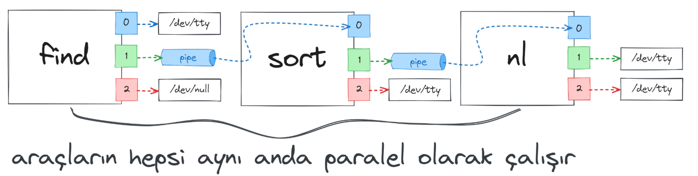
xxxxxxxxxx$ ls -la /etc/Bu komutu çalıştırdığınızda uzun bir öğeler listesi göreceksiniz. Bu çıktıyı bir dosyaya yönlendirmek yerine, çıktıyı less gibi başka bir komuta aktarıp çıktıyı sayfa sayfa görüntüleyebiliriz.
xxxxxxxxxx$ ls -la /etc/ | lessDikey çubukla temsil edilen pipe operatörü |, bir komutun standart çıktı (stdout) verisini alıp başka bir işlemin standart girdi (stdin) verisi haline getirmemizi sağlar. Bu durumda, ls -la /etc komutunun standart çıktısını alıp less komutuna aktardık.
Peki ya komut çıktımı iki farklı akışa yani hem konsol ekranına listelesin hemde dosyaya yazsın istersek, tee komutu kullanır:
xxxxxxxxxx$ ls /etc/ | tee liste2.txt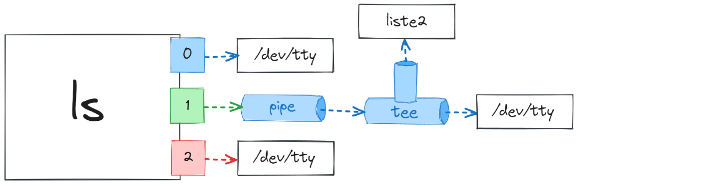
Ekranda ls komutunun çıktısını görmelisiniz ve liste2.txt dosyasını açarsanız aynı bilgileri görmelisiniz!
Bu temel yaklaşım dışında, birden fazla dosyaya aynı veriyi kaydetmek isterseniz, dosyaların isimlerini argüman olarak vermeniz yeterli.
xxxxxxxxxx┌──(ahmet㉿kali)-[~]└─$ ls /etc/ | head | tee dosya1 dosya2 dosya3 adduser.confalsaalternativesapache2apparmorapparmor.daptarp-scanavahibash.bashrc
┌──(ahmet㉿kali)-[~]└─$ paste dosya1 dosya2 dosya3adduser.conf adduser.conf adduser.confalsa alsa alsaalternatives alternatives alternativesapache2 apache2 apache2apparmor apparmor apparmorapparmor.d apparmor.d apparmor.dapt apt aptarp-scan arp-scan arp-scanavahi avahi avahibash.bashrc bash.bashrc bash.bashrcNormalde tee komutu aynı isimde bir dosya varsa onun üzerine yazar. Yani o dosyanın içeriğini yok edip, elindeki verileri o dosyaya yazar. Eğer aynı isimli dosya varsa dosya içeriğinin sonuna yeni verilerin eklenmesini istersek “append” yani “ekleme” ifadesinin kısaltması olan a seçeneğini kullanabiliriz.
Yetki gerektiren bir görevi yerine getirmek için komutumuzun en başına sudo ifadesini yazıp eğer yetkimiz uygunsa çalıştırabiliyoruz. Normalde /etc/apt/sources.list dosyasını düzenlemek için yetkimiz yok fakat en yetkili kullanıcı gibi davranmak için komutumuzun başına sudo yazıp işlemi yerine getirebiliriz.
Örneğin sudo echo "### eklenecek veri" >> /etc/apt/sources.list şeklinde komutumuzu girelim.
xxxxxxxxxx┌──(ahmet@kali)-[~]└─$ sudo echo "### eklenecek veri" >> /etc/apt/sources.listbash: /etc/apt/sources.list: Permission deniedAncak gördüğünüz gibi yetki hatası aldık. Halbuki komutumuzu sudo yetkisi ile çalıştırdığımız için işlem gerçekleşmeliydi.
Burada sudo komutu işe yaramadı çünkü yönlendirmeler üzerinde sudo komutunun etkisi bulunmuyor. Yani yönlendirmeyi yine mevcut yetkisiz kullanıcımız yapmış oluyor. Dolayısıyla sudo komutunu kullansak dahi yönlendirme operatörü ile, ilgili dosyaya veri yazma yetkisi kazanamayız. Fakat bunun yerine tee komutunu sudo ile yetkili şekilde çalıştırıp işlemimizi gerçekleştirebiliriz. Komutumuzu echo "### eklenecek veri" | sudo tee -a /etc/apt/sources.list şeklinde yazıyorum. Buradaki a seçeneğini unutmayın aksi halde bu çok önemli dosyasının tüm içeriğinin silinmesine neden olabilirsiniz.
xxxxxxxxxx┌──(ahmet㉿kali)-[~/Masaüstü/Documents]└─$ echo "### eklenecek veri" | sudo tee -a /etc/apt/sources.list[sudo] password for ahmet: ###
┌──(ahmet㉿kali)-[~/Masaüstü/Documents]└─$ cat /etc/apt/sources.list# See https://www.kali.org/docs/general-use/kali-linux-sources-list-repositories/deb http://http.kali.org/kali kali-rolling main contrib non-free non-free-firmware
# Additional line for source packages# deb-src http://http.kali.org/kali kali-rolling main contrib non-free non-free-firmware### eklenecek veriBakın dosyanın en sonuna “### eklenecek veri” ifadesi eklenmiş.
env (Environment)
Linux'ta env komutu, temel olarak ortam değişkenlerini (environment variables) yönetmek ve görüntülemek için kullanılan çok yönlü bir araçtır.
Aşağıdaki komutu çalıştırdığızda ev dizininize giden yolu görmelisiniz:
xxxxxxxxxx$ echo $HOMEKullanıcı adınızı görmek için:
xxxxxxxxxx$ echo $USERBu bilgiler ortam değişkenlerinizden geliyor. Tüm ortam değişkenlerini görmek için:
xxxxxxxxxx$ envBu komut, şu anda ayarladığınız ortam değişkenleri hakkında bir sürü bilgi verir. Bu değişkenler, kabuğun ve diğer işlemlerin kullanabileceği faydalı bilgiler içerir.
Örneğin:
xxxxxxxxxxPATH=/usr/local/sbin:/usr/local/bin:/usr/sbin:/bin
PWD=/home/kullanıcı
USER=kullanıcıÖnemli bir değişken PATH değişkenidir. Bu değişkenlere, değişken adının önüne bir $ işareti koyarak erişebilirsiniz:
xxxxxxxxxx$ echo $PATH
/usr/local/sbin:/usr/local/bin:/usr/sbin:/bincut
Bu komut, satırların istenilen bölümlerinin kesilmesini sağlıyor.
Öncelikle cut aracı da elindeki verilerin hangi parçalardan oluştuğunu anlamak için bir “delimiter” yani “sınırlayıcı” karakter belirtmemizi istiyor. Bunun için cut komutundan sonra -d seçeneğinin hemen ardından sınırlayıcı karakteri yazmamız gerek.
Örneğin benim dosyamda boşluk karakteri sütunları birbirinden ayırdığı için ben tırnak için “ “ boşluk karakterinin sınırlayıcı olduğunu belirteceğim. Şimdi son olarak hangi sütunların, yani aslında hangi bölümlerin kalmasını istiyorsak, bunu “fields” yani “alanlar-bölümler” seçeneğinin kısalması olan -f seçeneğinin hemen ardından belirtebiliyoruz. Ben 1 ila 3. bölümleri almak istediğim için 1-3 şeklinde yazıyorum ve işlenecek verilerin bulunduğu dosyanın ismini de ekleyip komutumu onaylıyorum.
xxxxxxxxxx┌──(ahmet㉿kali)-[~/Belgeler]└─$ cat metin.txt # öncelikle üzerinde çalışacağımız metin.txt dosyasını görüntülüyoruz.satir1sutun1 satir1sutun2 satir1sutun3 satir1sutun4 satir1sutun5satir2sutun1 satir2sutun2 satir2sutun3 satir2sutun4 satir2sutun5satir3sutun1 satir3sutun2 satir3sutun3 satir3sutun4 satir3sutun5satir4sutun1 satir4sutun2 satir4sutun3 satir4sutun4 satir4sutun5satir5sutun1 satir5sutun2 satir5sutun3 satir5sutun4 satir5sutun5satir6sutun1 satir6sutun2 satir6sutun3 satir6sutun4 satir6sutun5satir7sutun1 satir7sutun2 satir7sutun3 satir7sutun4 satir7sutun5satir8sutun1 satir8sutun2 satir8sutun3 satir8sutun4 satir8sutun5
┌──(ahmet㉿kali)-[~/Belgeler]└─$ cut -d " " -f 1-3 metin.txt satir1sutun1 satir1sutun2 satir1sutun3satir2sutun1 satir2sutun2 satir2sutun3satir3sutun1 satir3sutun2 satir3sutun3satir4sutun1 satir4sutun2 satir4sutun3satir5sutun1 satir5sutun2 satir5sutun3satir6sutun1 satir6sutun2 satir6sutun3satir7sutun1 satir7sutun2 satir7sutun3satir8sutun1 satir8sutun2 satir8sutun3Eğer bir aralığı değil de spesifik olarak listelemek istediğiniz sütunlar varsa -f seçeneğinden sonra virgülle ayırarak belirtebilirsiniz.
xxxxxxxxxx┌──(ahmet㉿kali)-[~/Belgeler]└─$ cut -d " " -f 3,5 metin.txt satir1sutun3 satir1sutun5satir2sutun3 satir2sutun5satir3sutun3 satir3sutun5satir4sutun3 satir4sutun5satir5sutun3 satir5sutun5satir6sutun3 satir6sutun5satir7sutun3 satir7sutun5satir8sutun3 satir8sutun5xxxxxxxxxx$ cut -c 5 metin.txtBu komut, dosyadaki her satırın 5. karakterini çıktı olarak verir. Boşluk da bir karakter olarak sayılır.
paste
Normalde cat komutu ile birden fazla dosyayı okurken dosyaların içerikleri peşi sıra alt alta bastırılıyorken, paste aracı ile bu çıktıların yan yana bastırılmasını sağlar.
xxxxxxxxxx┌──(ahmet㉿kali)-[~/Belgeler]└─$ cat sayılar.txt sehirler.txt harfler.txt 12345istanbulizmirmuşelazığdenizliABCDE
┌──(ahmet㉿kali)-[~/Belgeler]└─$ paste sayılar.txt sehirler.txt harfler.txt 1 istanbul A2 izmir B3 muş C4 elazığ D5 denizli E paste aracına sütunları nasıl ayıracağını belirtmek için de İngilizce “delimiter” yani “sınırlayıcı” ifadesinin kısalmasından gelen -d seçeneğinin ardından sınırlayıcı karakteri yazabiliriz.
xxxxxxxxxx└─$ paste -d "|" sayılar.txt sehirler.txt harfler.txt 1|istanbul|A2|izmir|B3|muş|C4|elazığ|D5|denizli|EAyrıca sınırlama işareti dışında eğer her bir satırı yan yana değil de alt alta eşleşecek şekilde sıralamak istersek -s seçeneğini de kullanabiliyoruz.
xxxxxxxxxx└─$ paste -s sayılar.txt sehirler.txt harfler.txt 1 2 3 4 5istanbul izmir muş elazığ denizliA B C D Ehead
Metin dosyalarında, özellikle sistem günlükleri gibi çok uzun dosyalarda, genellikle yalnızca ilk birkaç satıra bakmak istersiniz. Bunu yapmak için head komutunu kullanabilirsiniz.
head komutu varsayılan olarak bir dosyanın ilk 10 satırını görüntüler. Aşağıdaki komut, sistem günlüklerinden (/var/log/syslog) ilk 10 satırı görüntüleyecektir:
xxxxxxxxxx$ head /var/log/syslogİlk kaç satırı görmek istediğinizi belirtmek için -n seçeneğini kullanabilirsiniz. Örneğin, ilk 15 satırı görmek istiyorsanız:
xxxxxxxxxx$ head -n 15 /var/log/syslog-n seçeneğini ile birlikte satır sayısını belirterek, uzun dosyalarda hızlı bir şekilde özet bilgi edinebilirsiniz.
tail
head komutuna benzer şekilde, tail komutu da varsayılan olarak bir dosyanın son 10 satırını görüntülemenizi sağlar. Sistem günlüklerine (/var/log/syslog) bakalım:
xxxxxxxxxx$ tail /var/log/sysloghead komutunda olduğu gibi, görmek istediğiniz satır sayısını da değiştirebilirsiniz:
xxxxxxxxxx$ tail -n 15 /var/log/syslogtail komutunun gerçekten faydalı bir özelliği de, dosya içeriği güncellendikçe onu takip edebilmesidir. Bunu yapmak için -f (takip) seçeneğini kullanabilirsiniz.
xxxxxxxxxx$ tail -f /var/log/syslogSisteminizle etkileşim kurarken syslog dosyanız sürekli değişecektir. tail -f kullanarak, bu dosyaya eklenen her şeyi görebilirsiniz. Bu, sisteminizde neler olup bittiğini gerçek zamanlı olarak takip etmek için kullanışlıdır.
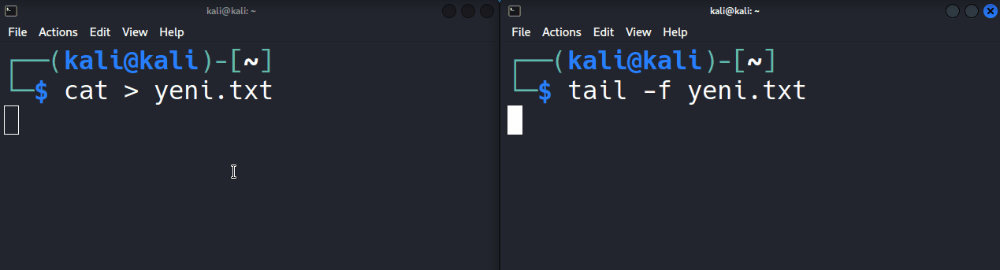
expand ve unexpand
Normalde tablar genellikle boşluk bırakır ancak bazı metin editörleri bunu net göstermeyebilir. Bir metin dosyasındaki tablar istediğiniz aralığı sağlamayabilir. Sekmeleri boşluklara dönüştürmek için expand komutunu kullanabilirsiniz.
xxxxxxxxxx$ expand dosya.txtBu komut, her taksimi bir grup boşluğa dönüştürerek çıktıyı yazdıracaktır. Bu çıktıyı bir dosyaya kaydetmek için aşağıdaki gibi çıktı yönlendirmeyi kullanın.
xxxxxxxxxx$ expand dosya.txt > sonuc.txtexpand komutunun tersi olarak, boşluk gruplarını unexpand komutuyla tek bir tab'a dönüştürebilirsiniz:
xxxxxxxxxx$ unexpand -a sonuc.txtBu, özellikle metin dosyaları farklı programlar arasında paylaşılırken veya bir metin dosyasının biçimini korumak istediğinizde kullanışlıdır.
wc ve nl
Bu komut, bir dosyadaki toplam kelime sayısını görüntüler.
xxxxxxxxxx┌──(ahmet㉿kali)-[~/Belgeler]└─$ cat sayılar.txt 12 3456789
┌──(ahmet㉿kali)-[~/Belgeler]└─$ wc sayılar.txt 2 3 12 sayılar.txtBuradaki ilk sayı dosya içeriğinin kaç satır olduğunu, ortadaki sayı toplam kaç kelime olduğunu ve son sayı ise toplam kaç karakter olduğunu bildiriyor.
Belirli bir alanı saydırmak için
-l(satır),-w(kelime) veya-c(karakter) seçeneklerini kullanabilirsiniz.
xxxxxxxxxx$ wc -l /etc/passwd96Bir dosyadaki satır sayısını görmek için
nl(satır numaralandırma) komutunu da kullanabilirsiniz.
xxxxxxxxxx$ cat dosya1.txtbenadana'yıseviyorumxxxxxxxxxx$ nl dosya1.txt1. ben2. istanbul'u3. seviyorum🧾 Gelişmiş Metin İşlemleri
🔼 Başa Dön
xargs
Standart girdiden okuduğu verileri kendisinden sonraki komutun argümanı olarak iletebiliyor. Bu sayede standart girdiden veri kabul etmeyen araçları, tıpkı biz elle o araca argümanlar girmişiz gibi çalıştırabiliyoruz.
Örneğin içerisinde veri bulunan dosyamı oluşturmak üzere echo "dosya1 dosya2 dosya3" > veri şeklinde komutumu giriyorum.
xxxxxxxxxx┌──(ahmet㉿kali)-[~]└─$ echo "dosya1 dosya2 dosya3" > veri
┌──(ahmet㉿kali)-[~]└─$ cat veri dosya1 dosya2 dosya3Şimdi ben bu dosyada geçen ifadelerin kullanılarak yeni dosyalar oluşturulması için touch aracına bu dosyadan veri yönlendirmek istiyorum.
xxxxxxxxxx┌──(ahmet㉿kali)-[~]└─$ cat veri | touch touch: missing file operandTry 'touch --help' for more information.Gördüğünüz gibi touch komutu oluşturulacak dosya isimleri argüman olarak iletilmediği için hata verdi. Bu hatanın argüman eksikliğinden kaynaklandığını teyit etmek istersek tekrar yalnızca touch komutunu girdiğimizde aynı hata ile karşılaşırız.
touch aracı yalnızca kendisine argüman olarak iletilen verileri işleyip, standart girdiden veri okumadığı için pipe ile ilettiğimiz “veri” dosyasının içeriği touch aracı tarafından işlenmedi. Bu durumda bu çıktıları önce xargs aracına yönlendirip oradan da touch aracına argüman olarak iletilmelerini sağlayabiliriz.
xxxxxxxxxx┌──(ahmet㉿kali)-[~]└─$ cat veri | xargs touch
┌──(ahmet㉿kali)-[~]└─$ ls dosya1 dosya2 dosya3 veriBakın tam olarak dosyada bulunan veriler ile aynı isimde yeni dosyalar oluşturulmuş. Yani xargs aracının standart girdiden okuduğu verileri hemen yanındaki komutun argümanı olarak çalıştırdığını bizzat teyit etmiş olduk.
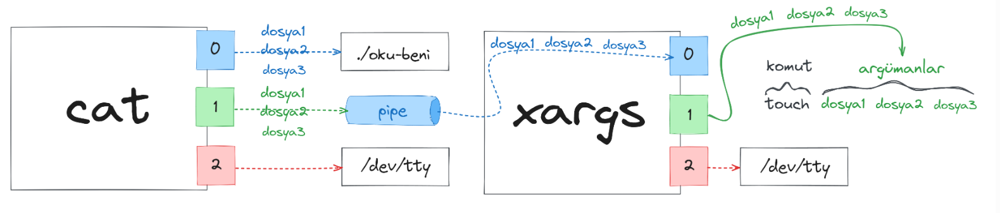
xargs aracı kendisine girdi olarak verilerin tüm verileri standart şekilde boşluklarından parçalara ayırıp bunların her birini hemen yanındaki komuta ayrı ayrı argüman olarak iletiyor.
join ve split
Bu komut, ortak bir alanı temel alan birden fazla dosyayı birleştirebilir.
Örneğin, iki dosyayı birleştirmek istediğinizi varsayalım:
xxxxxxxxxxdosya1.txt
1 John 2 Jane 3 Mary
dosya2.txt
1 Doe 2 Doe 3 Sue
$ join dosya1.txt dosya2.txt
1 John Doe2 Jane Doe3 Mary SueGördüğünüz gibi, dosyalar varsayılan olarak ilk alana göre birleştirilir ve alanların aynı olması gerekir. Aksi halde dosyaları sıralayabilirsiniz. Bu örnekte dosyalar 1, 2, 3 üzerinden birleştirildi.
Farklı alanları birleştirmek için hangi alanları kullanacağınızı belirtmeniz gerekir. Örneğin, dosya1.txt'de 2. alanı ve dosya2.txt'de 1. alanı birleştirmek istiyorsanız, komut şöyle görünür:
xxxxxxxxxx$ join -1 2 -2 1 dosya1.txt dosya2.txt
1 John Doe2 Jane Doe3 Mary Sue-1 dosya1.txt'yi, -2 ise dosya2.txt'yi temsil eder.
split: Bu komut, tek bir dosyayı birden fazla dosyaya böler.
xxxxxxxxxx$ split dosyaBu komut, satır sayısı 1000'e ulaştığında dosyayı birden fazla dosyaya böler. Oluşan dosyalar varsayılan olarak x** şeklinde adlandırılır.
sort
Bu komut, bir dosyadaki satırları alfabetik sıraya göre sıralar.
Örneğin, dosya1.txt adlı bir dosyanız olduğunu varsayalım:
dosya1.txt
köpek inek kedi fil kuş
xxxxxxxxxx$ sort dosya1.txt
filinekkediköpekkuşGördüğünüz gibi, sort komutu satırları alfabetik sıraya göre sıraladı.
Ters Sıralama:
Ters sıralama yapmak için -r seçeneğini kullanabilirsiniz:
xxxxxxxxxx$ sort -r dosya1.txt
kuşköpekkediinekfilSayısal Sıralama:
Sayısal değer içeren metinleri sıralamak için -n seçeneğini kullanabilirsiniz:
xxxxxxxxxx$ sort -n dosya1.txt
filinekkediköpekkuşBu örnekte, sayılar metin içinde yer almasına rağmen, sort komutu -n seçeneği sayesinde sayısal olarak sıraladı.
tr (Translate)
Bu komut, bir metin içindeki karakterleri başka karakterlere dönüştürmek için kullanılır.
Örneğin, tüm küçük harfleri büyük harflere dönüştürmek için:
xxxxxxxxxx$ tr a-z A-Z
hello
HELLOKomutta a-z küçük harflerin aralığını, A-Z ise büyük harflerin aralığını belirtir. Böylece, tr komutu yazdığınız tüm küçük harfleri büyük harfe dönüştürür.
uniq (Unique)
uniq (unique) komutu, metin ayrıştırmak için kullanışlı bir başka araçtır.
Çok sayıda yinelenen öğe içeren bir dosyanız olduğunu varsayalım:
xxxxxxxxxxreading.txtkitapkitapkağıtkağıtmakalemakaledergiYinelenen öğeleri kaldırmak istiyorsanız, uniq komutunu kullanabilirsiniz:
xxxxxxxxxx$ uniq reading.txtkitapkağıtmakaledergiBir satırın kaç kez tekrar ettiğini görelim:
xxxxxxxxxx$ uniq -c reading.txt2 kitap2 kağıt2 makale1 dergiYalnızca tekil değerleri görelim:
xxxxxxxxxx$ uniq -u reading.txtdergiYalnızca yinelenen değerleri görelim:
xxxxxxxxxx$ uniq -d reading.txtkitapkağıtmakaleDikkat: uniq komutu, yan yana olmayan yinelenen satırları algılamaz. Örneğin, reading.txt dosyanız aşağıdaki gibi olsun:
xxxxxxxxxxreading.txtkitapkağıtkitapkağıtmakaledergimakaleBu durumda uniq reading.txt komutu tüm satırları döndürür.
uniq komutunun bu sınırlamasını aşmak için sort komutuyla birlikte kullanabilirsiniz:
xxxxxxxxxx$ sort reading.txt | uniqmakalekitapdergikağıtBu şekilde, tüm yinelenen satırlar, konumlarından bağımsız olarak kaldırılır.
grep
Belirli bir kalıpla eşleşen karakterleri dosyalarda aramanıza olanak tanır. grep aracı standart girdiden veya kendisine argüman olarak verilmiş olan dosyadan veri okuyup filtreleyebiliyor.
Bir dizinde belirli bir dosyanın olup olmadığını veya bir metnin bir dosyada bulunup bulunmadığını öğrenmek için grep aracı kullanılır!
Örneğin /etc/passwd dosyasında kaç kez “false” ifadesinin geçtiğini öğrenmek üzere grep komutundan sonra araştırmak istediğiniz kelimeyi ve daha sonra da hangi dosyada araştırılacağını giriyoruz.
xxxxxxxxxx┌──(ahmet㉿kali)-[~]└─$ grep "false" /etc/passwddhcpcd:x:100:65534:DHCP Client Daemon:/usr/lib/dhcpcd:/bin/falsemysql:x:101:102:MariaDB Server:/nonexistent:/bin/falsetss:x:102:104:TPM software stack:/var/lib/tpm:/bin/falseDebian-snmp:x:112:115::/var/lib/snmp:/bin/falsespeech-dispatcher:x:116:29:Speech Dispatcher:/run/speech-dispatcher:/bin/falselightdm:x:124:127:Light Display Manager:/var/lib/lightdm:/bin/falsesddm:x:125:128:Simple Desktop Display Manager:/var/lib/sddm:/bin/falseDebian-gdm:x:980:980:Gnome Display Manager:/var/lib/gdm3:/bin/false# yada┌──(ahmet㉿kali)-[~]└─$ cat /etc/passwd | grep falsedhcpcd:x:100:65534:DHCP Client Daemon:/usr/lib/dhcpcd:/bin/falsemysql:x:101:102:MariaDB Server:/nonexistent:/bin/falsetss:x:102:104:TPM software stack:/var/lib/tpm:/bin/falseDebian-snmp:x:112:115::/var/lib/snmp:/bin/falsespeech-dispatcher:x:116:29:Speech Dispatcher:/run/speech-dispatcher:/bin/falselightdm:x:124:127:Light Display Manager:/var/lib/lightdm:/bin/falsesddm:x:125:128:Simple Desktop Display Manager:/var/lib/sddm:/bin/falseDebian-gdm:x:980:980:Gnome Display Manager:/var/lib/gdm3:/bin/falseBirden fazla dosyanın tüm içeriğinde de filtreleme yapabiliriz. Örneğin /etc/passwd ve /etc/group dosya içeriklerinde “root” ifadesinin aranmasını için grep “root” /etc/passwd /etc/group şeklinde komut girebiliriz.
Not : Eğer tersi şekilde aradığımız ifadenin geçmediği bölümleri istersek bulun için grep aracının hariç tutma özelliği olan -v seçeneğini kullanabiliyoruz.
Özyinelemeli Araştırma Örnek olarak
/etc/dizini içinde, “bashrc” ifadesi geçen tüm dosyaları filtrelemeyi deneyebiliriz. Bunun içingrep -r “bashrc” /etc/ 2> /dev/nullşeklinde komutumu giriyorum. Buradaki-rseçeneği benim hedef gösterdiğim bu dizinden başlayıp tüm alt dizinler de dahil olmak üzere tüm dosyalarda “bashrc” ifadesinin geçtiği yerleri filtreleyip bana sunacak. Ayrıca yetki gibi nedenlerle oluşacak olan hatalı çıktıları yok etmek için2> /dev/nullkomutunu da ekledim.
xxxxxxxxxx┌──(ahmet@kali)-[~]└─$ grep -r "bashrc" /etc/ 2> /dev/null/etc/skel/.bashrc.original:# ~/.bashrc: executed by bash(1) for non-login shells./etc/skel/.bashrc.original:# this, if it's already enabled in /etc/bash.bashrc and /etc/profile/etc/skel/.bashrc.original:# sources /etc/bash.bashrc)./etc/skel/.profile: # include .bashrc if it exists/etc/skel/.profile: if [ -f "$HOME/.bashrc" ]; then/etc/skel/.profile: . "$HOME/.bashrc"/etc/skel/.bashrc:# ~/.bashrc: executed by bash(1) for non-login shells./etc/skel/.bashrc:# this, if it's already enabled in /etc/bash.bashrc and /etc/profile/etc/skel/.bashrc:# sources /etc/bash.bashrc)./etc/apparmor.d/abstractions/bash: @{HOME}/.bashrc r,/etc/apparmor.d/abstractions/bash: /etc/bashrc r,/etc/apparmor.d/abstractions/bash: /etc/bash.bashrc r,/etc/apparmor.d/abstractions/bash: /etc/bash.bashrc.local r,/etc/apparmor.d/abstractions/bash: # run out of /etc/bash.bashrc/etc/bash.bashrc:# System-wide .bashrc file for interactive bash(1) shells./etc/bash.bashrc.save.1:# System-wide .bashrc file for interactive bash(1) shells./etc/bash.bashrc.save:# System-wide .bashrc file for interactive bash(1) shells./etc/profile: # The file bash.bashrc already sets the default PS1./etc/profile: if [ -f /etc/bash.bashrc ]; then/etc/profile: . /etc/bash.bashrcBüyük/Küçük Harfe Duyarlı Olmayan Arama:
-i seçeneği ile büyük/küçük harfe duyarlı olmayan aramalar yapabilirsiniz:
xxxxxxxxxx$ grep -i "false" /etc/groupDiğer Komutlarla Kombinasyon:
grep komutunu, | sembolü ile diğer komutlarla birleştirebilirsiniz. Bu sayede daha esnek aramalar yapabilirsiniz:
xxxxxxxxxx$ env | grep -i Userregex (Regular Expressions)
Düzenli ifadeler, daha önce karşılaştığımız yıldız (*) gibi özel semboller kullanarak desenlere göre metin seçimi yapan güçlü bir araçtır. Bu ifadeler hemen hemen tüm programlama dillerinde kullanılabilir. grep aracı; “basit”, “genişletilmiş” ve “perl uyumlu” olmak üzere üç tür genişletme özelliğini destekliyor olmasına karşın varsayılan olarak “basit” genişletmeyi kullanıyor.
Regex’in temel karakterleri:
. - Herhangi bir tek karakteri temsil eder (satır sonu karakteri hariç).
* - Bir önceki karakterin sıfır veya daha fazla tekrarını temsil eder.
+ - Bir önceki karakterin bir veya daha fazla tekrarını temsil eder.
? - Bir önceki karakterin sıfır veya bir kez tekrarını temsil eder.
^ - Dizinin başlangıcını temsil eder.
$ - Dizinin sonunu temsil eder.
[] - Bir karakter kümesini belirtir. Bu kümedeki herhangi bir karakterle eşleşir.
[a-z] - Küçük harflerin olduğu bir karakter aralığını belirtir.
[A-Z] - Büyük harflerin olduğu bir karakter aralığını belirtir.
[0-9] - Rakamların olduğu bir karakter aralığını belirtir.
\ - Özel karakterlerin (örneğin . ) özel anlamlarını iptal eder.
| - Alternatifler arasında bir seçenek yani “ya da” koşulu belirtir.
Örnek metnimiz isimler.txt dosyası kullanılarak bazı filtreleme işlemleri yapalım:
^ ile Satırın Başı
Örneğin ben “ay” ifadesiyle başlayan satırları filtrelemek istersem grep “^ay” isimler.txt şeklinde komutumu yazabilirim.
xxxxxxxxxx└─$ grep "^ay" isimler.txt
aydinayşe fulyaayşe gizemaykutaydinayşeayşegül$ ile Satırın Sonu
xxxxxxxxxx└─$ grep "ay$" isimler.txt KorayMehmet korayFerayTümayerayNurayIlkaygökay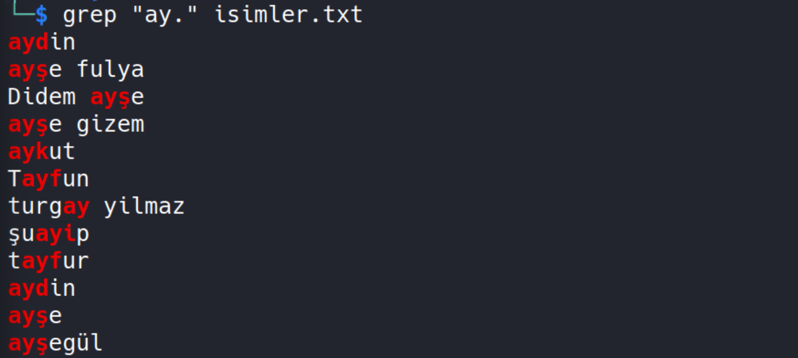
Örnek metnimiz olarak şunu ele alalım:
xxxxxxxxxxalican deniz kabukları satıyorsahile göre
. ile Tek Karakter Eşleşmesi
xxxxxxxxxxs.
ifadesi "sahile" ile eşleşir.[] ile Köşeli Ayraç Kullanımı
Köşeli ayraçlar, içinde belirtilen karakterlerden herhangi biriyle eşleşmeyi sağlar.
xxxxxxxxxxk[ıaö]z
Bu ifade "kız", "kaz" ve "köz" ile eşleşir.Daha önce gördüğümüz `^`` sembolü, köşeli ayraç içinde kullanıldığında ayraç içindeki karakterler hariç herhangi bir karakteri temsil eder.
xxxxxxxxxxk[^ı]z
Bu ifade "kaz" ve "köz" ile eşleşir ancak "kız" ile eşleşmez.Köşeli ayraçlar ayrıca aralıklarla birden fazla karakteri temsil edebilir.
xxxxxxxxxxk[a-c]z
Bu ifade "kaz", "kbz" ve "kcz" gibi desenlerle eşleşir.Köşeli ayraçlar büyük/küçük harfe duyarlıdır:
xxxxxxxxxxk[A-C]z
Bu ifade "kAz", "kBz" ve "kCz" ile eşleşir, ancak "kaz", "kbz" ve "kcz" ile eşleşmez.Emacs
Emacs, son derece güçlü bir metin editörü arayan kullanıcılar içindir. Tüm kod düzenlemelerinizi, dosya işlemlerinizi vb. her şeyi emacs içinde yapabilirsiniz. Vim'e göre biraz daha yavaş açılır ve öğrenme eğrisi biraz daha diktir, ancak son derece genişletilebilir güçlü bir editör istiyorsanız, emacs tam size göre. Genişletilebilir derken, işlevselliğini genişleten emacs için script'ler yazabileceğinizi kastediyorum.
Emacs'ı başlatmak için:
xxxxxxxxxxemacskomutunu kullanın. Varsayılan karşılama tamponuyla karşılanmalısınız.
Emacs'ta metinlerinizin bulunduğu yer tamponlardır. Yani bir dosya açarsanız, o dosyanın içeriğini depolamak için bir tampon kullanılır. Aynı anda birden fazla tampon açabilir ve tamponlar arasında kolayca geçiş yapabilirsiniz.
Emacs Dosyaları Manipüle Etme
Emacs dokümantasyonlarında C-[harf] sözdizimini göreceksiniz. Bu sadece Ctrl tuşuna basıp ardından belirtilen harfe basmak anlamına gelir, ancak kısaltma amacıyla Ctrl tuşuna C diyeceğiz. Eğer M-[harf] gibi bir sözdizimi görürseniz, bu genellikle Alt tuşu olan Meta tuşunu kullanmanız gerektiğini belirtir.
Dosya Kaydetme
xxxxxxxxxxC-x C-s - Bir dosyayı kaydeder.
C-x C-w - Dosyayı farklı kaydet (farklı isim vermek için).
C-x s - Tüm dosyaları kaydeder.Dosya kaydetme seçenekleri her dosyayı kaydetmek isteyip istemediğinizi soracaktır.
Dosya Açma
xxxxxxxxxxC-x C-fBu sizi açmak için bir dosya adı yazmaya yönlendirecektir. Zaten var olan bir dosyanız yoksa, yeni bir dosya oluşturacaktır. Ayrıca bir dizini de yükleyebilirsiniz.
Emacs Buffer Navigasyonu
Tamponlar (veya ziyaret ettiğiniz dosyalar) arasında gezinmek için aşağıdaki komutlar kullanılır:
Buffer Değiştirme
xxxxxxxxxxC-x b - Tampon değiştirir.
C-x sağ ok - Tamponlar arasında sağa doğru dolaşır.
C-x sol ok - Tamponlar arasında sola doğru dolaşır.Buffer Kapatma
xxxxxxxxxxC-x kGeçerli Buffer Bölme
xxxxxxxxxxC-x 2Bu, tek bir ekran üzerinde birden fazla tampon görmenizi sağlar. Bu tamponlar arasında gezinmek için: C-x o kullanılır.
Tek Bir Buffer Ekran Olarak Ayarlama
xxxxxxxxxxC-x 1Eğer terminal multiplexer (ekran ve tmux gibi) kullandıysanız, tampon komutları size oldukça tanıdık gelecektir.
Metin Gezinme
xxxxxxxxxxC-yukarı ok : Bir paragraf yukarı git.C-aşağı ok : Bir paragraf aşağı git.C-sol ok : Bir kelime sola git.C-sağ ok : Bir kelime sağa git.M-> : Tamponun sonuna git.Metin gezinmesinde, normal metin tuşlarınız olması gerektiği gibi çalışır; Home, End, Page Up, Page Down ve ok tuşları vb.
Kesme ve Yapıştırma
Emacs'ta metni kesmek (kill) veya yapıştırmak (yank) için öncelikle metni seçmeniz gerekir. Metni seçmek için, imlecinizi kesmek veya yapıştırmak istediğiniz yere getirin ve ardından C-space tuşuna basın. Ardından istediğiniz metni seçmek için gezinme tuşlarını kullanabilirsiniz. Şimdi kesme ve yapıştırmayı aşağıdaki gibi yapabilirsiniz:
xxxxxxxxxxC-w : Kes.C-y : Yapıştır.Emacs'ten Çıkış
xxxxxxxxxxC-x C-cEmacs'ten çıkmadan önce herhangi bir açık tamponunuz varsa, kaydetmek isteyip istemediğinizi soracaktır.
xxxxxxxxxxC-h C-h : yardım menüsüGeri Al
xxxxxxxxxxC-x uGörebileceğiniz gibi Emacs'ın daha fazla hareketli parçacığı var, bu nedenle öğrenme eğrisi biraz daha zorlu. Ancak bunun karşılığında, çok güçlü bir metin editörü elde edersiniz.
🧑🧒🧒 Kullanıcı Yönetimi
🔼 Başa Dön
Kullanıcılar ve Gruplar
Geleneksel tüm işletim sistemlerinde kullanıcılar ve gruplar bulunur. Bunlar yalnızca erişim ve izinleri yönetmek için vardır. Bir işlem çalıştırıldığında, ister Jane ister Bob olsun, bu işlemin sahibi olarak çalışır. Dosya erişimi ve sahipliği de izinlere bağlıdır. Jane'in Bob'un belgelerini görmesini istemezsiniz ve bunun tersi de geçerlidir.
Her kullanıcının kullanıcıya özgü dosyalarının saklandığı kendi ana dizini vardır. Bu genellikle /home/kullanıcı_adı konumunda bulunur, ancak farklı dağıtımlarda değişebilir.
Sistem, kullanıcıları yönetmek için kullanıcı kimlikleri (UID) kullanır. Kullanıcı adları, kullanıcıları tanımlama ile ilişkilendirmenin kolay yoludur, ancak sistem kullanıcıları UID'lerine göre tanımlar. Sistem ayrıca izinleri yönetmek için gruplar kullanır. Gruplar, izin seti o grup tarafından belirlenen kullanıcı kümeleridir ve sistem tarafından grup kimliği (GID) ile tanımlanır.
Linux'ta, sistemi kullanan normal insanlara ek olarak kullanıcılarınız da olacaktır. Bazen bu kullanıcılar, sistemi çalışır durumda tutmak için sürekli olarak işlemleri çalıştıran sistem hizmetleridir (daemon). En önemli kullanıcılardan biri root veya “süper” kullanıcıdır. root, sistemdeki en güçlü kullanıcıdır, root herhangi bir dosyaya erişebilir ve herhangi bir işlemi başlatabilir veya sonlandırabilir. Bu nedenle, her zaman root olarak çalışmak tehlikeli olabilir, potansiyel olarak sistem için kritik öneme sahip dosyaları silebilirsiniz. Neyse ki, root erişimine ihtiyaç duyulursa ve bir kullanıcının root erişimi varsa, sudo komutuyla bir komutu root olarak çalıştırabilir. sudo komutu (superuser do), bir komutu root erişimiyle çalıştırmak için kullanılır.
Linux’ta “süper(Super User)”, “sistem(System User)” ve “normal(Normal User)” olmak üzere üç tür kullanıcı bulunuyor.
Süper Kullanıcı: Aslında daha çok root yani “Kök Kullanıcı” olarak bilinen, sistem üzerindeki tüm haklara sahip olan en yetkili kullanıcı hesabına verilen bir isim. Yani biz root hesabını kullanıyorken, sistemdeki en yetkili olan “süper kullanıcı” hesabını yönetiyor olacağız.
Sistem Kullanıcısı: Yazılım veya uygulamalar tarafından oluşturulan ve yönetilen kullanıcılara da “sistem kullanıcısı” deniyor. Örneğin sistemimizde saatin senkronize edilmesini sağlayan ntp isimli bir araç yüklüyse bu aracın görevini yerine getirmek için kendisine ait bir sistem kullanıcı hesabı bulunuyordur. Bu sayede gerektiğinde bu kullanıcı hesabı üzerinden görevlerini yerine getirebilir. Tabii ki tüm araçların kendilerine ait kullanıcı hesapları olmasa da işte tıpkı ntp aracında olduğu gibi sistemdeki çeşitli yazılımların, işlerini görmek için kendi kullanıcı hesapları olması gerekebiliyor. Bu hesaplar insanların değil yazılımların, sistemdeki çeşitli görevleri yerine getirebilmek için kullandığı türden hesaplardır. Bu sebeple bu tür hesaplara “sistem kullanıcı” hesabı deniyor. Bu kullanıcıların yetkileri, yalnızca görevlerini yerine getirebilecekleri düzeyde olduğu için yetkileri olmayan işler yapamazlar.
Normal Kullanıcı: Normal olarak geçen kullanıcı hesapları, kök kullanıcısının oluşturduğu standart kullanıcı hesaplarıdır. Standart kullanıcıların temel görevleri yerine getirebilmeleri için oluşturulan hesaplardır. Bu tür hesapları standart insanlar kullanacağı için normal kullanıcılar kendi ev dizinlere sahiptir. Yani genellikle /home dizini altında kullanıcı isimleriyle oluşturulmuş olan bir klasörde, kişisel dosyalarını barındırmaları için bir ev dizinleri vardır. Ev dizini, insanların kişisel dosyalarını düzenli şekilde tutabilmeleri ve kendi kullanıcı hesaplarına yönelik kişiselleştirilmiş çalışma ortamına sahip olabilmeleri için önemli bir yaklaşım. Ev dizinleri dışında tabii ki normal kullanıcılar da sahip oldukları yetkiler dahilinde sistemdeki araçları kullanabilirler. Yetkilerinin düşük veya yüksek olmasına göre sistem üzerinde yetkileri dahilinde hareket edebilirler.
sudo komutu
Sistemi yönetirken, yetki gerektiren işlemler yapmamız gerebilir. Sistemde en yetkili kullanıcının root olduğunu öğrendik. Bu durumda ilgili görevleri yerine getirmek için root hesabına geçiş yapabiliriz. Ancak root hesabındayken, tüm yetkilere sahip olacağınız için, hatalı şekilde kritik dosyaları silmenizi önleyecek veya sistemin işleyişine zarar verecek bir eyleminizde sizi uyaracak bir mekanizma yoktur. Her şeyi root olarak çalıştırmak kritik bir hata yapmayı çok daha kolaylaştırır, sistem konfigürasyonlarını değiştirmek için kullandığınız komutların kayıtlarını tutmaz vb. Temel olarak, süper kullanıcı olarak komut çalıştırmanız gerekiyorsa, sadece sudo kullanın. Çünkü root hesabını yalnızca gerektiğinde kullandığınız ve ne yaptığınızı bildiğiniz varsayılır. Zaten root hesabını kullanmak tehlikeli olabileceği için çoğu sistemde root hesabı pasif şekilde gelir. Siz aktifleştirmediğiniz sürece root hesabı kullanılamaz.
Buna karşın root hesabı aktif olmasa bile yetki gerektiren işlerimiz için geçici olarak root yetkileri ile hareket edebilmemizi sağlayan sudo komutunu kullanabiliyoruz. sudo sayesinde root hesabı aktif değilken veya root aktifse bile root hesabının şifresini bilmeden yönetici ayrıcalıkları ile işlerimizi yürütmemiz mümkün oluyor.
Korunan bir dosyayı, örneğin /etc/shadow dosyasını görüntülemeye çalışın:
xxxxxxxxxxcat /etc/shadowİzin reddedildi hatası alındı. İzinlere şu komutla bakılır:
xxxxxxxxxxls -l /etc/shadowçıktı:
xxxxxxxxxx-rw-r----- 1 root shadow 1134 Dec 1 11:45 /etc/shadowBurada olan root dosyanın sahibi ve içeriği okumak için root erişimine sahip olmanız veya shadow grubunun bir parçası olmanız gerekiyor. Şimdi komutu sudo ile çalıştırın:
xxxxxxxxxxsudo cat /etc/shadowArtık dosyanın içeriğini görebileceksiniz!
sudoers dosyası
Sistem her sıradan kullanıcının süper kullanıcı olarak komut çalıştırmasına izin vermiyor, /etc/sudoers dosyası sudo çalıştırabilen kullanıcıları listeler. Bu dosyayı visudo komutuyla düzenleyebilirsiniz. Aslında normalde herhangi bir metin editörünü de kullanabiliriz fakat visudo aracı sayesinde dosyadaki yeni tanımların hata kontrolü yapıldığı için olası yanlış konfigürasyonların önüne geçmemiz de mümkün oluyor.
sudoers dosyası örnek:
xxxxxxxxxxroot ALL=(ALL:ALL) ALLahmet ALL=(ALL:ALL) ALL
Anlamı:
xxxxxxxxxxkullanıcı host=(kullanıcı:grup) yetki
ALL → tüm host
(ALL:ALL) → tüm kullanıcılar ve gruplar
ALL → tüm komutlar
Kullanıcıya sudo yetkisi vermek
Örnek:
xxxxxxxxxxahmet ALL=(ALL:ALL) ALL
veya grup ile:
xxxxxxxxxx%sudo ALL=(ALL:ALL) ALL
➜ Ubuntu / Kali / Debian sistemlerde sudo grubu kullanılır.
Kullanıcıyı gruba eklemek:
xxxxxxxxxxsudo usermod -aG sudo ahmetTemel sudoers dosyasının yeri /etc/sudoers dosyasıdır. Ek dosyalar /etc/sudoers.d/ dizininede kural eklenebilir.
Kullanıcıya Özel Tanımlama
xxxxxxxxxxali ALL=(ALL:ALL) /usr/bin/ls, /usr/bin/whoami
NOPASSWD ayarı (şifre sormasın)
Normal:
xxxxxxxxxxahmet ALL=(ALL:ALL) ALL
Şifresiz sudo:
xxxxxxxxxxahmet ALL=(ALL:ALL) NOPASSWD: ALL
Artık:
xxxxxxxxxxsudo ls
şifre istemez.
Sadece bazı komutlarda şifresiz
xxxxxxxxxxahmet ALL=(ALL:ALL) NOPASSWD: /usr/bin/systemctl
Sadece belirli komuta izin verme
Örnek:
xxxxxxxxxxahmet ALL=(ALL:ALL) /usr/bin/apt
Sadece apt çalıştırabilir:
xxxxxxxxxxsudo apt updatefakat
xxxxxxxxxxsudo nanoçalışmaz.
Birden fazla komut
xxxxxxxxxxahmet ALL=(ALL:ALL) /usr/bin/apt, /usr/bin/systemctl
Komut yolu öğrenmek için:
xxxxxxxxxx$ which apt
/usr/bin/aptSadece belirli kullanıcıya sudo verme
Örnek:
xxxxxxxxxxahmet ALL=(postgres) ALL
Bu durumda:
xxxxxxxxxxsudo -u postgres psqlçalışır
fakat
xxxxxxxxxxsudo nanoçalışmaz.
sudoers.d kullanımı
Ana dosyayı değiştirmek yerine:
xxxxxxxxxx/etc/sudoers.d/
dosya oluştur:
xxxxxxxxxxsudo nano /etc/sudoers.d/ahmetyaz:
xxxxxxxxxxahmet ALL=(ALL:ALL) ALL
bu yöntem daha güvenlidir.
En çok kullanılan sudoers ayarları
Tam yetki →
ahmet ALL=(ALL:ALL) ALLŞifresiz → ahmet ALL=(ALL:ALL) NOPASSWD: ALL
Sadece apt → ahmet ALL=(ALL:ALL) /usr/bin/apt
Sadece root → ahmet ALL=(root) ALL
Grup sudo → %sudo ALL=(ALL:ALL) ALL
Kullanıcı Hesabı Oluşturma
Yeni bir kullanıcı hesabı oluşturmak istiyorsak, kullanıcı hesabı oluşturabilecek yetkimizin olması gerekiyor. Dolayısıyla bu işlem için en yetkili kullanıcı olan root kullanıcı hesabına ihtiyacımız var. Fakat bu durumun bir istisnası bulunuyor. Eğer normal bir kullanıcı root hesabının bulunduğu yetki grubuna dahil edildiyse bu kullanıcı, root gibi davranarak yetki gerektiren işlemleri yapabilir. Biz yetkili gruba dahil olduğumuzu kanıtlamak için sudo komutunu kullanıyoruz.
Yeni bir hesap oluşturmak için, “adduser” ya da “useradd” komutlarından herhangi birini kullanabiliyoruz.
xxxxxxxxxx$ sudo adduser nil
Yeni parola: Yeni parolayı tekrar girin: passwd: şifre başarıyla güncellendi nil için kullanıcı bilgileri değiştiriliyor Yeni değeri girin, veya varsayılan değer için ENTER'a basın Tam İsim []: Oda Numarası []: İş Telefonu []: Ev Telefonu []: Diğer []: Is the information correct? [Y/n] yArkaplanda gerçekleşen işlemler:
Belirttiğim isimde yani “nil” ismiyle kullanıcını eklendi,
“nil” isimli yeni bir grup oluşturuldu,
“nil” kullanıcısı bu gruba eklendi,
nil’in ev dizinin
/home/nildizininde oluşturuldu,ev dizinine
/etc/skeldizinindeki dosyalar kopyalandı.
useradd komutu ile kullanıcı oluşturma:
xxxxxxxxxxsudo useradd -m aliBu kullanıcı hesabına parola tanımlamak için de passwd komutunu kullanabiliriz.
xxxxxxxxxx$ sudo passwd ali
New password: Retype new password: passwd: password updated successfully/etc/passwd dosyası
Kullanıcı adları aslında kullanıcılar için gerçek tanımlayıcılar değildir. Sistem, bir kullanıcıyı tanımlamak için bir kullanıcı kimliği (UID) kullanır. Hangi kullanıcının hangi kimliğe eşleştiğini bulmak için /etc/passwd dosyasına bakın.
xxxxxxxxxx$ cat /etc/passwd
root:x:0:0:root:/root:/usr/bin/shdaemon:x:1:1:daemon:/usr/sbin:/usr/sbin/nologinbin:x:2:2:bin:/bin:/usr/sbin/nologinsys:x:3:3:sys:/dev:/usr/sbin/nologin...king-phisher:x:133:141::/var/lib/king-phisher:/usr/sbin/nologintaylan:x:1000:1000:,,,:/home/taylan:/usr/bin/bashnil:x:1001:1002:,,,:/home/nil:/bin/bashali:x:1002:1004::/home/ali:/bin/sh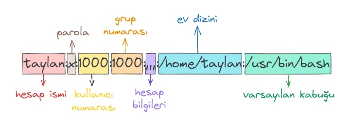
Bu dosya size bir kullanıcı listesi ve onlar hakkında detaylı bilgiler gösterir.
Her satır bir kullanıcı için kullanıcı bilgilerini görüntüler, genellikle ilk satırda root kullanıcısını görürsünüz. Size kullanıcı hakkında ek bilgiler veren noktalarla ayrılmış birçok alan vardır.
Kullanıcı adı
Kullanıcının şifresi - şifre gerçekte bu dosyada saklanmaz,
/etc/shadowdosyasında hash'li şekilde saklanır. Bu alanda birçok farklı sembol görebilirsiniz, eğer bir "x" görürseniz şifrenin/etc/shadowdosyasında saklandığı anlamına gelir, "*" sembolü kullanıcının oturum açma erişimine sahip olmadığı ve boş bir alan varsa kullanıcının şifresinin olmadığı anlamına gelir.Kullanıcı kimliği (UID) - gördüğünüz gibi root'un UID'si 0'dır
Grup kimliği
GECOS alanı - Bu genellikle kullanıcının gerçek adı veya telefon numarası gibi kullanıcı veya hesap hakkında yorum bırakmak için kullanılır, virgülle ayrılır.
Kullanıcının ana dizini
Kullanıcının kabuğu - muhtemelen birçok kullanıcının kabuğu olarak varsayılan olarak
bash'ı göreceksiniz
Normalde bir kullanıcının ayar sayfasında yalnızca normal kullanıcıları görmeyi beklersiniz. Ancak, /etc/passwd'ın diğer kullanıcıları da içerdiğini fark ede1ceksiniz. Unutmayın, kullanıcılar aslında sistemde yalnızca farklı izinlerle işlem çalıştırmak için vardır. Bazen önceden belirlenmiş izinlerle işlem çalıştırmak isteriz. Örneğin, daemon kullanıcısı daemon procesleri için kullanılır.
Ayrıca, kullanıcı eklemek ve bilgileri değiştirmek istiyorsanız /etc/passwd dosyasını manuel olarak vipw aracıyla düzenleyebilirsiniz. Ancak useradd , adduser ve userdel gibi araçları kullanmak en iyisidir.
Eğer bir kullanıcı hesabının bilgilerini silmeden o kullanıcı hesabını deaktif halde getirmek istersek; ilgili kullanıcının varsayılan kabuk programı yerine, kullanıcının oturum açmasını reddeden /usr/sbin/nologin dosyasını yazabiliriz.
Ben ali kullanıcısının oturum açmasını engellemek için buradaki kabuğu /usr/sbin/nologin şeklinde giriyorum.
xxxxxxxxxxali:x:1002:1004::/home/ali:/usr/sbin/nologinnologin dosyasına benzer şekilde false dosyası da kullanıcının oturum açmasına engel olmak için kullanılan dosya. Fakat nologin dosyasından farklı olarak kullanıcıya bu durumda bir uyarı verilmeden kullanıcı doğrudan reddediliyor.
Mevcut konsolumuz üzerinden yeni bir kullanıcı hesabına geçiş yapmak için su komutunun ardından geçiş yapmak istediğimiz hesabın ismini girmemiz yeterli oluyor.
xxxxxxxxxx$ su aliParola: This account is currently not available.Bu şekilde komut girdiğimizde su aracı, ilgili kullanıcı hesabına geçiş yaparken mevcut kabuğun çalışma ortamındaki mevcut dizinini ve ortam değişkenleri gibi çeşitli özellikleri koruyarak geçiş yapılan kullanıcının kabuğunu alt kabukta başlatıyor. Yani aslında sıfırdan temiz bir kabuk ortamı başlatılmıyor.
Eğer biz mevcut kabuktan etkilenmeyecek temiz bir kabuk başlatılsın istersek komutumuz su - kullanıcı-adı şeklinde girebiliriz.
/etc/shadow dosyası
/etc/shadow dosyası, kullanıcı kimlik doğrulaması hakkında bilgi depolamak için kullanılır. Bu dosyayı okumak için süper kullanıcı izinleri gerekir.
xxxxxxxxxxsudo cat /etc/shadowİçeriği /etc/passwd dosyasına oldukça benziyor ancak şifre alanında şifreli bir şifre göreceksiniz. Alanlar şöyle noktalarla ayrılır:
Kullanıcı adı
Şifreli şifre
Son şifre değiştirme tarihi - 1 Ocak 1970'ten itibaren geçen gün sayısı olarak ifade edilir. 0 varsa bu, kullanıcının bir sonraki oturum açışında şifresini değiştirmesi gerektiği anlamına gelir
Minimum şifre yaşı - Bir kullanıcının şifresini tekrar değiştirebilmesi için beklemesi gereken gün sayısı
Maksimum şifre yaşı - Bir kullanıcının şifresini değiştirmesi gerekene kadar geçecek maksimum gün sayısı
Şifre uyarı süresi - Şifrenin süresi dolmadan önceki gün sayısı
Şifre etkinsizlik süresi - Şifresi süresi dolmuş bir kullanıcının şifresiyle oturum açmasına izin verilen gün sayısı
Hesap son kullanma tarihi - Kullanıcının oturum açamayacağı tarih
Gelecekte kullanılmak üzere ayrılmış alan
Günümüzdeki çoğu dağıtımda, kullanıcı kimlik doğrulaması yalnızca /etc/shadow dosyasına güvenmez, kimlik doğrulamayı değiştiren PAM (Pluggable Authentication Modules) gibi başka mekanizmalar da vardır.
/etc/group dosyası
Kullanıcı yönetiminde kullanılan bir diğer dosya ise /etc/group dosyasıdır. Bu dosya, farklı izinlere sahip farklı gruplar oluşturulmasını sağlar.
xxxxxxxxxx$ cat /etc/group
root:x:0:daemon:x:1:bin:x:2:sys:x:3:adm:x:4:root,taylan...vboxsf:x:142:kaboxer:x:143:root,taylantaylan:x:1000:nil:x:1002:ali:x:1004:/etc/passwd dosyasına benzer şekilde, /etc/group dosyası alanları aşağıdaki gibidir:
Grup adı
Grup şifresi - grup şifresi belirlemeye gerek yoktur, sudo gibi yükseltilmiş bir ayrıcalık kullanmak standarttır. Varsayılan değer olarak "x" yerleştirilir.
Grup kimliği (GID)
Kullanıcı listesi - Belirli bir grupta istediğiniz kullanıcıları manuel olarak belirleyebilirsiniz.
Kullanıcı Yönetim Araçları
Bir kullanıcının gruplarını öğrenmek için groups komutu kullanılır. (örn. groups ali)
Yeni bir grup oluşturmak için groupadd aracını kullanabiliriz. (örn. sudo groupadd yeni-grup)
Teyid etmek için:
xxxxxxxxxx$ tail -1 /etc/groupyeni-grup:x:1005:Mevcut gruba kullanıcı eklemek için gpasswd aracını kullanabiliriz. (örn. sudo gpasswd -a ali yeni-grup)
Teyid etmek için:
xxxxxxxxxx$ tail -1 /etc/groupyeni-grup:x:1005:ali
$ groups aliali : ali yeni-grupGruptan kullanıcı silmek için gpasswd aracının -d seçeneği yani “delete” seçeneğiyle gruba ekli olan kullanıcıyı silebiliriz.yeni-grup grubuna eklediğimiz ali kullanıcısını silmek için:
xxxxxxxxxx$ sudo gpasswd -d ali yeni-grup Removing user ali from group yeni-grupTeyid etmek için:
xxxxxxxxxx$ groups aliali : aliGrup silmek için groupdel aracı kullanılır.
xxxxxxxxxxsudo groupdel yeni-grupTeyid etmek için:
xxxxxxxxxxgrep "yeni-grup" /etc/groupKullanıcı Silme
Bir kullanıcıyı kaldırmak için userdel komutunu kullanabilirsiniz.
xxxxxxxxxxsudo userdel aliFakat bu şekilde kullandığımızda kullanıcı hesabının ev dizini silinmediği için ek olarak -r seçeneğini de eklememiz gerekiyor.
Bu komut, temel olarak useradd tarafından yapılan dosya değişikliklerini geri almaya çalışır.
Silmek istediğiniz kullanıcının oturumu hala aktifse ve çalışmakta olan işlemler dolayısıyla silme işlemi başarısız olur. Bu durumda bu işlemleri sonlandırıp silme işlemini tekrar deneyebiliriz. Yada force yani zorlama seçeneğini kullanabiliriz. Bu seçenek sayesinde, silmek istediğimiz kullanıcıya ait aktif işlemler olsa bile silme işlemi gerçekleştiriliyor.
Şifre Değiştirme
Aşağıdaki komut size veya başka bir kullanıcıya (root yetkisine sahipseniz) şifreyi değiştirme izni verir.
xxxxxxxxxxsudo passwd ali📁 İzinler
🔼 Başa Dön
Dosya İzinleri
Dosyaların farklı izinleri veya dosya modları vardır, örneğin:
x┌──(ahmet㉿kali)-[~]└─$ ls -l
toplam 56drwxr-xr-x 2 ahmet ahmet 4096 Oca 12 16:55 Belgelerdrwxrwxrwx 2 ahmet ahmet 4096 Ara 1 12:28 'BiglyBT Downloads'drwxr-xrwx 2 ahmet ahmet 4096 Kas 25 13:35 Geneldrwxrwxr-x 4 ahmet ahmet 4096 Ara 1 13:08 GNUstepdrwxr-xrwx 3 ahmet ahmet 4096 Oca 15 17:26 İndirilenlerdrwxr-xrwx 13 ahmet ahmet 4096 Oca 16 21:53 Masaüstü-rw-rw-r-- 1 ahmet ahmet 24 Oca 16 22:28 metin.txtdrwxr-xrwx 2 ahmet ahmet 4096 Kas 25 13:35 Müzikdrwxr-xr-x 10 ahmet ahmet 4096 Oca 21 1970 pycharm-2025.3drwxrwxr-x 4 ahmet ahmet 4096 Ara 16 12:38 PyCharmMiscProjectdrwxrwxr-x 6 ahmet ahmet 4096 Oca 14 21:02 Python-3.14.2drwxr-xrwx 3 ahmet ahmet 4096 Ara 3 16:11 Resimlerdrwxr-xrwx 2 ahmet ahmet 4096 Kas 25 13:35 Şablonlardrwxr-xrwx 3 ahmet ahmet 4096 Ara 5 22:23 VideolarBir dosyanın izinlerinin dört bölümü vardır. İlk bölüm, izinlerdeki ilk karakterle gösterilen dosya türüdür. Bizim durumumuzda bir dizine baktığımız için dosya türü için d gösterir. Çoğunlukla normal bir dosya için - görürsünüz.
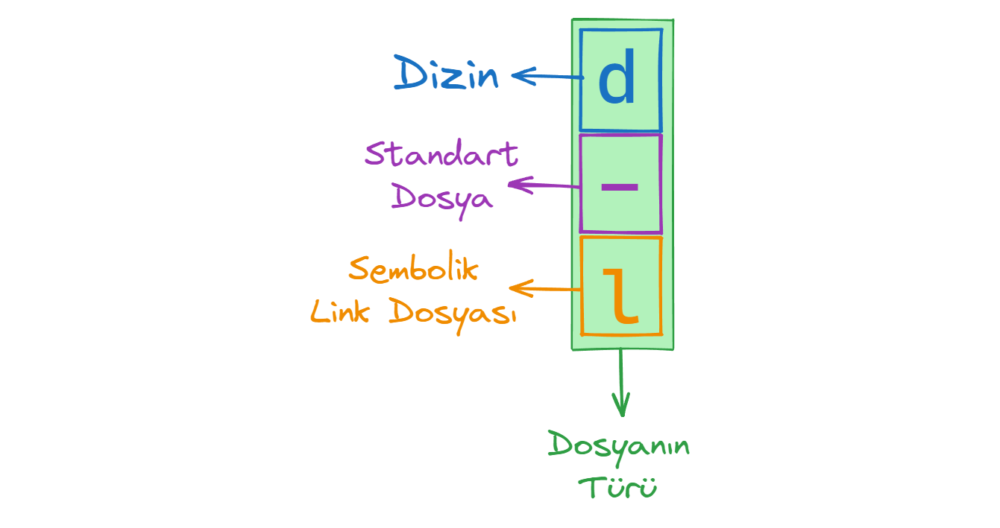
Dosya modunun sonraki üç bölümü gerçek izinlerdir. İzinler her biri 3 bitli gruplara ayrılır. İlk 3 bit kullanıcı izinleridir, ardından grup izinleri ve sonra diğer izinler gelir. Farklılaştırmayı kolaylaştırmak için izinler boru sembolü (|) ile ayırıldı.
xxxxxxxxxxd | rwx | r-x | r-x 2 ahmet ahmet 4096 Oca 12 16:55 BelgelerHer karakter farklı bir izni temsil eder:
r: okunabilir
w: yazılabilir
x: yürütülebilir (temel olarak yürütülebilir bir program)
-: boş
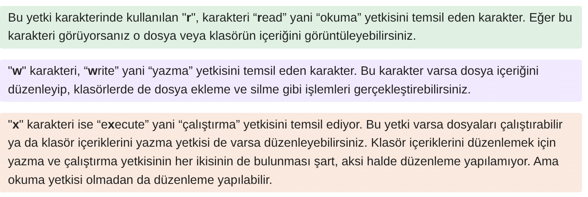
Dolayısıyla yukarıdaki örnekte, ahmet kullanıcısının dosya üzerinde okuma, yazma ve yürütme izinlerine sahip olduğunu görüyoruz. Grubun okuma ve yürütme izni vardır. Son olarak, diğer kullanıcıların (herkesin) okuma ve yürütme izni vardır.
İzinlerin Değiştirilmesi
İzinleri değiştirmek chmod komutu ile yapılabilir.
Öncelikle hangi izin setini değiştirmek istediğinizi seçin: kullanıcı-sahibi(u), grup(g) veya diğer(o). İzinleri + ile ekleyebilir, - ile kaldırabilirsiniz.
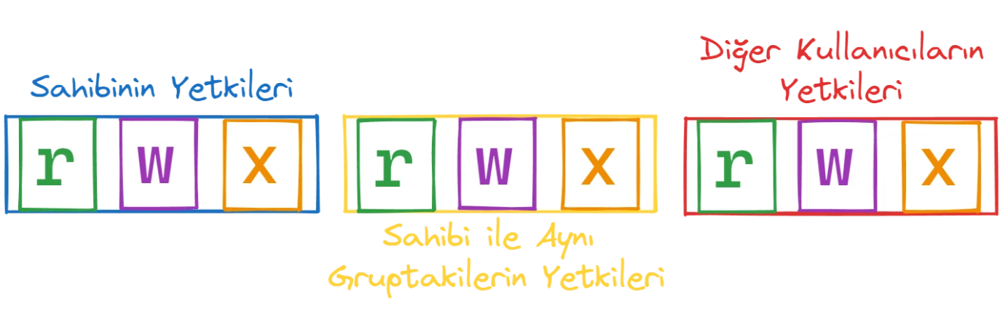
Dosyaya İzin Eklenme
xxxxxxxxxxchmod u+x metin.txtYukarıdaki komut metin.txt üzerindeki izinleri değiştirerek kullanıcı setine yürütülebilir izin biti ekler. Bu sayede artık kullanıcının bu dosya üzerinde yürütme izni var!
Dosyadan İzin Kaldırma
xxxxxxxxxxchmod u-x metin.txtDosyaya Birden Fazla İzin Eklenme
xxxxxxxxxxchmod ug+w metin.txtİzinler sayısal biçimdede değiştirilir. Bu yöntem izinleri tek seferde değiştirmenize olanak tanır. İzinleri temsil etmek için r, w veya x kullanmak yerine, tek bir izin seti için sayısal bir gösterim kullanacaksınız. Dolayısıyla g ile grubu veya u ile kullanıcıyı belirtmenize gerek yok.
Sayısal gösterimler aşağıda verilmiştir:
4: okuma izni
2: yazma izni
1: yürütme izni

xxxxxxxxxxchmod 755 metin.txtBu dosyaya, 755 artık tüm setler için izinleri kapsar. İlk sayı (7) kullanıcı izinlerini, ikinci sayı (5) grup izinlerini ve son 5 ise diğer izinleri temsil eder.
7 = 4 + 2 + 1 yani 7 kullanıcı(sahibi) izinleri okuma, yazma ve yürütme izinlerine sahip, 5 = 4 + 1 grubun okuma ve yürütme izinlerine sahip, 5 = 4 + 1 diğer tüm kullanıcıların okuma ve yürütme izni var.
Dikkat edilmesi gereken bir nokta: izinleri gelişigüzel değiştirmek iyi bir fikir değildir, hassas bir dosyayı herkesin değiştirmesine izin verebilirsiniz, ancak izinleri gerçekten değiştirmek istediğiniz birçok durumda, chmod komutunu kullanırken önlem alın.
Sahiplik İzinleri
Dosya izinlerini değiştirmenin yanı sıra, dosyanın grup ve kullanıcı sahipliğini de değiştirebilirsiniz. Bunun için chown komutu kullanılır.
Kullanıcı sahipliğini değiştirme
xxxxxxxxxxsudo chown ahmet metin.txtBu komut, metin.txt dosyasının sahibini ahmet olarak ayarlayacaktır.
Grup sahipliğini değiştirme
xxxxxxxxxxsudo chgrp yeni-grup metin.txtBu komut, metin.txt dosyasının grubunu yeni-grup olarak ayarlayacaktır.
Kullanıcı ve grup sahipliğini aynı anda değiştirme
Kullanıcı adından sonra iki nokta üstüste (:) ve grup adı eklerseniz, kullanıcı ve grubu aynı anda ayarlayabilirsiniz.
xxxxxxxxxxsudo chown ahmet:yeni-grup metin.txtUmask
Herhangi bir dosya oluşturulduğunda, varsayılan izinlerle birlikte gelir. Bu varsayılan izin setini değiştirmek isterseniz, umask komutunu kullanabilirsiniz. Bu komut, sayısal izinlerde gördüğümüz 3 bitlik izin setini alır.
Ancak umask bu izinleri eklemek yerine kaldırır.
xxxxxxxxxxumask 021Yukarıdaki örnekte, yeni dosyaların varsayılan izinlerinin kullanıcılara her şeye erişim izni vermesini istediğimizi, ancak gruplar için yazma iznini ve diğerleri için yürütme iznini kaldırmak istediğimizi belirtiyoruz. Çoğu dağıtımda varsayılan umask 022'dir, yani tüm kullanıcı erişimi vardır, ancak grup ve diğer kullanıcılar için yazma erişimi yoktur.
umask komutunu çalıştırdığınızda, oluşturduğunuz herhangi bir yeni dosyada varsayılan izin setini verir. Ancak, bunun devam etmesini istiyorsanız, başlangıç dosyanızı (.profile) değiştirmeniz gerekir.
Setuid
Normal kullanıcıların bazı durumlarda işleri tamamlamak için yetki yükseltmesine ihtiyaçları vardır. Sistem yöneticisi, her seferinde bir kullanıcı korunan bir dosyaya erişmek istediğinde kök parola girmek için her zaman orada olamaz, bu nedenle bu davranışa izin vermek için özel dosya izin bitimleri vardır.
Set Kullanıcı Kimliği (SUID), bir kullanıcının programı kendisinin yerine program dosyasının sahibi olarak çalıştırmasına izin verir.
Bir örneğe bakalım:
Diyelim ki şifremi değiştirmek istiyorum, sadece passwd komutunu kullanıyorum:
xxxxxxxxxxpasswdpasswd komutu birkaç dosyayı değiştiriyor, ancak en önemlisi /etc/shadow dosyasını değiştiriyor. Bu dosyaya bakalım:
xxxxxxxxxx$ ls -l /etc/shadow
-rw-r----- 1 root shadow 1134 Dec 1 11:45 /etc/shadowBu dosya root'a ait? Root'a ait bir dosyayı nasıl değiştirebiliriz?
Bu sefer çalıştırdığımız komutun izin setine bakalım:
xxxxxxxxxx$ ls -l /usr/bin/passwd
-rwsr-xr-x 1 root root 47032 Dec 1 11:45 /usr/bin/passwdBurada yeni bir izin biti s gördünüz mü? Bu izin biti SUID'dir. Bir dosyada bu izin seti olduğunda, programı başlatan kullanıcılara dosya sahibi izinlerinin yanı sıra yürütme izni de verir, bu durumda root. Yani aslında bir kullanıcı passwd komutunu çalıştırırken root olarak çalışır.
Bu nedenle, passwd komutunu çalıştırdığımızda /etc/shadow gibi korunan bir dosyaya erişebiliyoruz. Şimdi bu biti kaldırırsanız, /etc/shadow'u değiştiremeyeceğiniz ve dolayısıyla şifrenizi değiştiremeyeceğinizi göreceksiniz.
SUID'yi Değiştirme
Normal izinler gibi, SUID izinlerini değiştirmenin iki yolu vardır.
Sembolik yol:
xxxxxxxxxxsudo chmod u+s myfileSayısal yol:
xxxxxxxxxxsudo chmod 4755 myfileGördüğünüz gibi, SUID bir 4 ile gösterilir ve izin setine eklenir. SUID'yi büyük S olarak görebilirsiniz, bu aynı şeyi yaptığı anlamına gelir, ancak yürütme izinleri yoktur.
Setgid
Set Grup Kimliği (SGID) izni
Kullanıcı kimliği (SUID) izin bitine benzer şekilde, bir set grup kimliği (SGID) izin biti de vardır. Bu bit, bir programın sanki o grubun bir üyesiymiş gibi çalışmasına izin verir.
Bir örneğe bakalım:
xxxxxxxxxx$ ls -l /usr/bin/wall
-rwxr-sr-x 1 root tty 19024 Dec 14 11:45 /usr/bin/wall// Some codeArtık izin bitinin grup izin seti içinde olduğunu görebiliyoruz.
SGID'yi Değiştirme
xxxxxxxxxx$ sudo chmod g+s myfile
$ sudo chmod 2555 myfileSGID için sayısal gösterim 2'dir.
İşlem İzinleri
SUID izin biti etkinleştirilmiş passwd komutunu çalıştırdığınızda programı root olarak çalıştırırsınız. Bu doğru, ancak siz geçici olarak root olduğunuz için diğer kullanıcıların şifrelerini değiştirebileceğiniz anlamına mı geliyor? Neyse ki hayır!
Bu, Linux'un uyguladığı birçok UID nedeniyledir. Her işlemle ilişkili üç UID vardır:
Bir işlemi başlattığınızda, onu çalıştıran kullanıcı veya grubun izinleriyle aynı izinlerle çalışır, bu etkin kullanıcı kimliği (effective user ID) olarak bilinir. Bu UID, bir işleme erişim hakkı vermek için kullanılır. Bu nedenle, Bob touch komutunu çalıştırdıysa, işlem onun kimliğiyle çalışır ve oluşturduğu tüm dosyalar onun sahipliğinde olur.
Gerçek kullanıcı kimliği (real user ID) olarak adlandırılan başka bir UID vardır, bu, işlemi başlatan kullanıcının kimliğidir. Bunlar, işlemi başlatan kullanıcının kimliğini takip etmek için kullanılır.
Son bir UID ise kayıtlı kullanıcı kimliği (saved user ID)dir, bu bir işlemin etkin kullanıcı kimliği ile gerçek kullanıcı kimliği arasında geçiş yapmasına izin verir. Bu yararlıdır çünkü işlemimizin her zaman yüksek ayrıcalıklarla çalışmasını istemeyiz, yalnızca belirli zamanlarda özel ayrıcalıklar kullanmak iyi bir uygulamadır.
Şimdi bunların hepsini bir araya getirmek için passwd komutuna bir kez daha bakalım.
passwd komutunu çalıştırırken, etkin kullanıcı kimliğiniz sizin kullanıcı kimliğinizdir, şimdilik 500 olduğunu varsayalım. Ancak bir dakika bekleyin, passwd komutunun SUID izni etkinleştirilmişti, değil mi? Dolayısıyla siz çalıştırdığınızda, etkin kullanıcı kimliğiniz artık 0'dır (0, root'un UID'sidir). Artık bu program dosyalara root olarak erişebilir.
Diyelim ki biraz güç zevki aldınız ve Sally'nin şifresini değiştirmek istiyorsunuz, Sally'nin UID'si 600. Neyse ki şansınız yok, çünkü işlem aynı zamanda sizin gerçek kullanıcı kimliğinize de sahip, bu durumda 500. İşlem sizin UID'nizin 500 olduğunu biliyor ve bu nedenle 600 UID'li kullanıcının şifresini değiştiremezsiniz. (Tabii ki, bir bilgisayarda süper kullanıcıysanız ve her şeyi kontrol edip değiştirebiliyorsanız, bu her zaman atlanır).
passwd'ı çalıştırdığınızdan beri, işlemi gerçek kullanıcı kimliğinizi kullanarak başlatacak ve dosyanın sahibinin UID'sini (etkin kullanıcı kimliği) kaydedecektir, böylece ikisi arasında geçiş yapabilirsiniz. Gerekli değilse tüm dosyaları root erişimiyle değiştirmeye gerek yok.
Çoğu zaman gerçek kullanıcı kimliği ve etkin kullanıcı kimliği aynıdır, ancak passwd komutu gibi durumlarda değişirler.
Sticky Bit
Bahsetmek istediğim son bir özel izin biti ise sticky bit'tir. Bu izin biti, "dosyayı/dizinizi yapıştırır" anlamına gelir, bu da yalnızca sahip veya root kullanıcının dosyayı silebileceği veya değiştirebileceği anlamına gelir. Bu, ortak dizinler için çok faydalıdır. Aşağıdaki örneğe bir göz atın:
xxxxxxxxxx$ ls -ld /tmp
drwxrwxrwxt 6 root root 4096 Dec 15 11:45 /tmpBurada sondaki t sembolünü göreceksiniz, bu herkesin /tmp dizinine dosya ekleyebileceği, yazabileceği, değiştirebileceği ancak yalnızca root kullanıcının /tmp dizinini silebileceği anlamına gelir.
Sticky Biti Değiştirme
xxxxxxxxxx$ sudo chmod +t mydir
$ sudo chmod 1755 mydirSticky bit için sayısal gösterim ise 1'dir.
🛠️ İşlem (Process) Yönetimi
🔼 Başa Dön
Diskimiz üzerinde mevcut bulunan ve sistemin çalıştırabileceği yapıda olan her türlü programın öncelikle RAM yani hafızaya yüklenmesi ve oradan da sırası geldiğinde CPU yani işlemci üzerinde işlenmesine bütüncül olarak “process” yani “işlem” diyoruz.
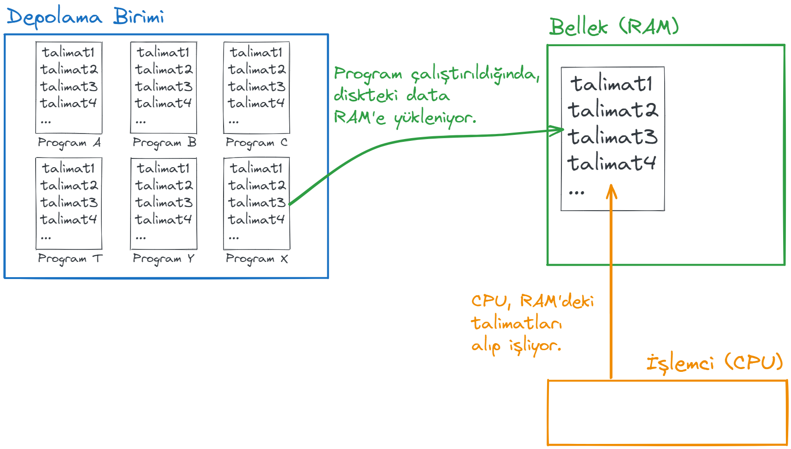
İşlem yönetimini, kabuğun başlattığı ve sistem genelinde kabuktan bağımsız başlatılmış olan işlemlerin yönetimi olarak ikiye ayırabiliriz.
Kabuk başlatabileceği iki tür işlem vardır.
Ön Planda(Foreground) Çalışanlar: Çalışmak için kullanıcı(konsol vasıtası ile) etkileşimine ihtiyacı olan işlemlerdir.
Arka Planda(Background) Çalışanlar: Kullanıcı etkileşimi olmaksızın arka planda otomatik olarak işlerini yürüten işlemlerdir.
Ön Plandaki İşlemler
Örneğin konsola firefox komutunu girecek olursak mevcut kabuk, firefox aracını bulup çalıştıracaktır.
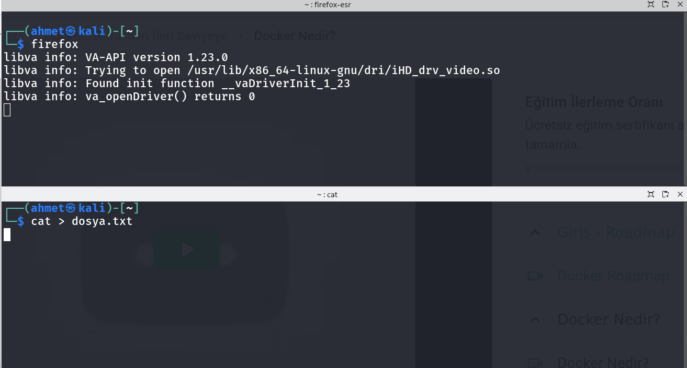
Fakat firefox aracı açık olduğu sürece “firefox” komutunu girmiş olduğumuz konsola yani bu kabuğa yeni herhangi bir komut giremeyiz. Aracı kapatmak için konsola Ctrl + C tuşlaması yapılmalı.
Üstelik ön plandaki işlemler grafiksel arayüze sahip olmak zorunda da değil. Örneğin cat > dosya.txt komutunu girdiğimizde mevcut konsol, cat aracının “dosya.txt” isimli dosyaya veri yazması için işlemi beklemeye başlıyor Ctrl + D tuşlaması ile veri girişini sonlandırana kadar cat işlemi ön planda bu konsol üzerinden bizden etkileşim bekliyor olacak.
Arka Plan İşlemleri
Arka plan işlemleri sistem tarafından başlatılabileceği gibi kabuğumuz üzerinden başlatmamız da mümkündür. Örneğin firefox aracını arka planda başlatmak ve mevcut konsolu meşgul etmesini önlemek istersek bash kabuğuna firefox & komutu girilir.
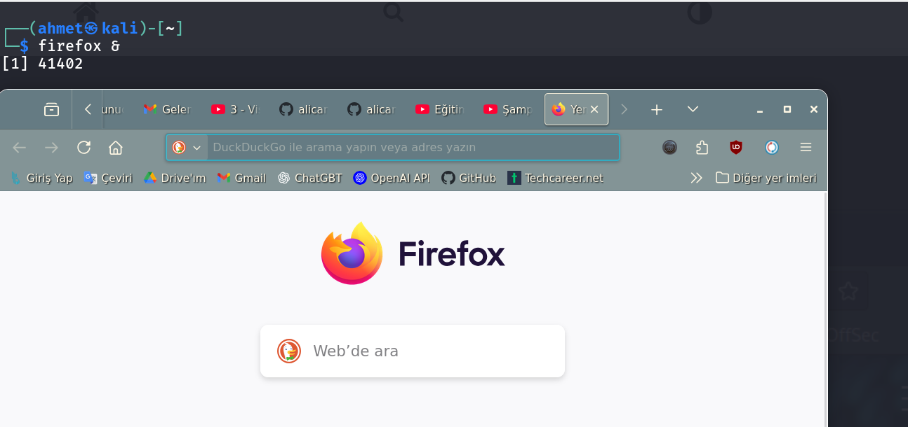
Firefox aracı arka planda açıldığı için bu aracı açan konsol bu işlem ile meşgul değil. Bu sebeple konsola yeni komutlar girmemiz mümkün.
Başlatılan işlemin durumunu kontrol etmek istersek jobs komutunu girip, mevcut kabuğun kontrolünde olan tüm işlemleri listeleyebiliriz.
xxxxxxxxxx┌──(ahmet㉿kali)-[~]└─$ firefox &[1] 52715
┌──(ahmet㉿kali)-[~]└─$ jobs[1]+ Çalışıyor firefox &Arka plandaki işlemi ön plana almak için “foreground” ifadesinin kısaltmasından gelen fg aracınıı, fg iş-numarası şeklinde kullanabiliyoruz. Arka planda çalışmakta olan firefox işleminin iş numarası 1 olduğu için fg 1 şeklinde komut girilir.
Başlatılmış olan işlemleri arka plana almak için işlemi durdurduktan sonra “background” ifadesinin kısaltmasından gelen bg iş-numarası şeklinde komutumuzu girebiliriz.
Eğer işlemi sonlandırmak istersek “öldürmek” anlamındaki kill % iş-numarası komutunu kullanabiliyoruz.
Sistem üzerinde çalışmakta olan işlemleri anlık olarak takip etmek üzere top aracını kullanabiliyoruz.
xxxxxxxxxxtop - 15:28:53 up 28 min, 1 user, load average: 0,35, 0,38, 0,39Tasks: 358 total, 1 running, 357 sleeping, 0 stopped, 0 zombie%Cpu(s): 3,6 us, 1,5 sy, 0,0 ni, 94,9 id, 0,0 wa, 0,0 hi, 0,0 si, 0,0 st MiB Mem : 15731,7 total, 9408,3 free, 3721,1 used, 3824,5 buff/cache MiB Swap: 17166,0 total, 17166,0 free, 0,0 used. 12010,7 avail Mem
PID USER PR NI VIRT RES SHR S %CPU %MEM TIME+ COMMAND 2814 ahmet 20 0 8735996 364576 154144 S 15,2 2,3 3:27.04 gnome-shell 9354 ahmet 20 0 1417,0g 367652 101840 S 12,3 2,3 2:49.64 chromium 2995 ahmet 20 0 1375672 152476 114412 S 7,6 0,9 0:05.54 konsole 2980 ahmet 20 0 920568 84452 67608 S 0,7 0,5 0:15.83 kdeconnectd 14328 root 0 -20 0 0 0 D 0,7 0,0 0:02.70 kworker/u49:1+i915_flip 15 root 20 0 0 0 0 I 0,3 0,0 0:03.35 rcu_preempt 20 root 20 0 0 0 0 S 0,0 0,0 0:00.00 cpu 21 root 20 0 0 0 0 S 0,0 0,0 0:00.00 cpuhp/2 . . .Biz q tuşuna basıp aracı kapatana kadar anlık olarak tüm işlemler konsola bastırılıyor olacak.
Tablodaki temel sütunları açıklayacak olursak:
PID: Process id yani benzersiz işlem numarasıdır.
USER: İşlemin sahibi olan kullanıcıdır.
PR: Priority yani işlem önceliğini belirtir.
NI: İşlemin “nice” değeri. Diğer işlemlere ne kadar öncelik vereceğini belirtir.
S: Status yani “durum” bilgisidir. Çeşitli durumlar mevcuttur:
R : Running (çalışıyor)
S : Sleeping (uyuyor)
T : Traced or stopped (durdurulmuş)
Z : Zombie (zombi)
%CPU: İşlem tarafından kullanılan CPU yüzdesi
%MEM; İşlem tarafından kullanılan RAM yüzdesi.
TIME+: İşlem tarafından tüketilen CPU zamanı.
Command: İşlemi başlatan komut.
ps (Processes)
İşlemler, makinenizde çalışan programlardır. Çekirdek tarafından yönetilirler ve her işlemin, işlem kimliği (PID) adı verilen bir kimliği vardır. Bu PID, işlemlerin oluşturulma sırasına göre atanır.
Tek başına ps komutunu girdiğimizde, yalnızca o anda mevcut konsol üzerinde çalışmakta olan işleme dair bilgi sunar.:
xxxxxxxxxx┌──(ahmet㉿kali)-[~]└─$ ps PID TTY TIME CMD 4175 pts/0 00:00:00 bash 11137 pts/0 00:00:34 Typora 24241 pts/0 00:00:00 top 27888 pts/0 00:00:00 psBu size mevcut işlemlerin hızlı bir görüntüsünü gösterir:
PID: İşlem Kimliği
TTY: İşlemle ilişkili kontrol terminali
TIME: Toplam CPU kullanım süresi
CMD: Yürütülebilir/komut adı
Geniş çaplı bilgi almak için genellikle ps aux komutu kullanılır.
a: tüm kullanıcılara ait olan işlemleri listeler.
u: işlemlerin sahibi olan kullanıcı bilgisini bastırır.
x: terminaller ile kontrol edilmeyen arka plan işlemlerini de bastırmayı sağlar.
xxxxxxxxxx$ ps auxa: Çalışan tüm işlemleri görüntüler, diğer kullanıcılar tarafından çalıştırılanlar dahil.
u: İşlemler hakkında daha fazla ayrıntı gösterir.
x: TTY'si olmayan tüm işlemleri listeler, bu programlar TTY alanında ? işareti gösterir, sistem başlangıcının bir parçası olarak başlatılan daemon süreçlerinde en yaygın olanıdır.
USER: Etkin kullanıcı (erişimini kullandığımız kullanıcı)
PID: İşlem Kimliği
%CPU: Kullanılan CPU zamanının, işlemin çalışma süresine bölünmüş hali
%MEM: İşlemin yerleşik küme boyutunun, makinenin fiziksel belleğine oranı
VSZ: Tüm işlemin sanal bellek kullanımı
RSS: Görev tarafından kullanılan takaslanmamış fiziksel bellek miktarı
TTY: İşlemle ilişkili kontrol terminali
STAT: İşlem durumu kodu
START: İşlemin başlangıç zamanı
TIME: Toplam CPU kullanım süresi
COMMAND: Yürütülebilir/komut adı
Bir işlemi durdurmak, duran işlemi devam ettirmek veya işlemi sonlandırmak istediğimizde ilgili işleme bu duruma uygun olan sinyali göndermemiz gerekiyor. Sinyal göndermek için de kill komutunu kullanabiliyoruz. kill komutu ile gönderebileceğimiz tüm sinyalleri görmek için kill -l komutunu kullanabiliriz.
xxxxxxxxxx┌──(ahmet㉿kali)-[~]└─$ kill -l 1) SIGHUP 2) SIGINT 3) SIGQUIT 4) SIGILL 5) SIGTRAP 6) SIGABRT 7) SIGBUS 8) SIGFPE 9) SIGKILL 10) SIGUSR111) SIGSEGV 12) SIGUSR2 13) SIGPIPE 14) SIGALRM 15) SIGTERM16) SIGSTKFLT 17) SIGCHLD 18) SIGCONT 19) SIGSTOP 20) SIGTSTP21) SIGTTIN 22) SIGTTOU 23) SIGURG 24) SIGXCPU 25) SIGXFSZ26) SIGVTALRM 27) SIGPROF 28) SIGWINCH 29) SIGIO 30) SIGPWR31) SIGSYS 34) SIGRTMIN 35) SIGRTMIN+1 36) SIGRTMIN+2 37) SIGRTMIN+338) SIGRTMIN+4 39) SIGRTMIN+5 40) SIGRTMIN+6 41) SIGRTMIN+7 42) SIGRTMIN+843) SIGRTMIN+9 44) SIGRTMIN+10 45) SIGRTMIN+11 46) SIGRTMIN+12 47) SIGRTMIN+1348) SIGRTMIN+14 49) SIGRTMIN+15 50) SIGRTMAX-14 51) SIGRTMAX-13 52) SIGRTMAX-1253) SIGRTMAX-11 54) SIGRTMAX-10 55) SIGRTMAX-9 56) SIGRTMAX-8 57) SIGRTMAX-758) SIGRTMAX-6 59) SIGRTMAX-5 60) SIGRTMAX-4 61) SIGRTMAX-3 62) SIGRTMAX-263) SIGRTMAX-1 64) SIGRTMAXYaygın kullanıma sahip temel sinyaller:
SIGKILL(9): Öldürme sinyali. Hedef işlemin anında sonlandırılmasını sağlar. Genellikle bir işlemi zorla sonlandırmak için son çare olarak kullanılır.SIGSTOP(19): Durdurma sinyali. Hedef işlemin askıya alınarak durdurulmasını sağlar. Ctrl + Z kısayoluyla da bu sinyal üretilebiliyor.SIGCONT(18): Devam sinyali. Daha önce durdurulan bir işlemin çalışmaya devam etmesini sağlıyor.
Çalışmakta olan bir işlemi durdurmak için sinyalın ismini ya da sayısal karşılığını kill SIGSTOP pid ya da kill -19 pid şeklinde girebiliyoruz. Durdurulmuş işlemi devam ettirmek için SIGCONT veya sinyalin sayısal karşılığı olan 18 sayısını kullanabiliyoruz. Eğer işlemi ani olarak kapatmak veya kapanmaya zorlamak istersek SIGKILL sinyalini yada 9 sayısını kullanırız.
killall komutu sayesinde argüman olarak verdiğimiz isimle eşleşen tüm işlemler sonlandırılıyor. Bu sayede tek tek hepsinin pid değerlerini bulmamız ve konsola girmemiz gerekmiyor. Kullanımı killall -9 firefox komutunu kullanacak olursak, firefox ile eşleşen tüm işlemler sonlandırılacak.
pgrep komutu “process” yani “işlemler” arasında bizim aradığımız işlemin, işlem numarasını filtreleyen bir araç. Bu sayede ilgili işlemin işlem numarasını manuel olarak bulmakla uğraşmamız gerekmiyor. İsmi üzerinden kolaylıkla öğrenebiliyoruz.
xxxxxxxxxx┌──(ahmet㉿kali)-[~]└─$ pgrep firefox 64622
┌──(taylan㉿linuxdersleri)-[~]└─$ ps x | tail 1220 pts/0 Ss 0:00 /usr/bin/bash 1258 ? Ss 0:00 /usr/libexec/bluetooth/obexd 61768 pts/1 Ss 0:00 /usr/bin/bash 62872 pts/0 S 0:00 sleep 700 64622 ? Sl 0:04 /usr/lib/firefox-esr/firefox-esr 64774 ? Sl 0:00 /usr/lib/firefox-esr/firefox-esr -contentproc -childID 2 -isForBrowser -prefsLen 4657 -prefMapSize 238089 -jsInit 285716 -parentBuildID 20220105212146 -appdir /usr/lib/firefox-esr/browser 64622 true tab 64810 ? Sl 0:00 /usr/lib/firefox-esr/firefox-esr -contentproc -childID 3 -isForBrowser -prefsLen 5317 -prefMapSize 238089 -jsInit 285716 -parentBuildID 20220105212146 -appdir /usr/lib/firefox-esr/browser 64622 true tab 64856 ? Sl 0:00 /usr/lib/firefox-esr/firefox-esr -contentproc -childID 5 -isForBrowser -prefsLen 5317 -prefMapSize 238089 -jsInit 285716 -parentBuildID 20220105212146 -appdir /usr/lib/firefox-esr/browser 64622 true tab 64948 pts/0 R+ 0:00 ps x 64949 pts/0 S+ 0:00 tail ┌──(ahmet㉿kali)-[~]└─$ kill -9 $(pgrep firefox)
┌──(ahmet㉿kali)-[~]└─$ ps x | tail 1182 ? Ssl 0:00 /usr/libexec/gvfs-afc-volume-monitor 1187 ? Ssl 0:00 /usr/libexec/gvfs-mtp-volume-monitor 1196 ? Sl 0:00 /usr/libexec/gvfsd-trash --spawner :1.15 /org/gtk/gvfs/exec_spaw/0 1209 ? Ssl 0:00 /usr/libexec/gvfsd-metadata 1220 pts/0 Ss 0:00 /usr/bin/bash 1258 ? Ss 0:00 /usr/libexec/bluetooth/obexd 61768 pts/1 Ss 0:00 /usr/bin/bash 62872 pts/0 S 0:00 sleep 700 65636 pts/0 R+ 0:00 ps x 65637 pts/0 S+ 0:00 tail⚙️ Servis Yönetimi
🔼 Başa Dön
Servisler, sürekli olarak çalışan, çeşitli görevleri yerine getiren ve sisteme işlevsellik sağlayan arka plan işlemleridir. Genellikle sistem başlangıcında otomatik olarak başlatılır ve sistem çalıştığı süre boyunca aksini gerektiren bir durum olmadığı sürece çalışırlar.
Sistemimizde aktif olan yani halihazırda çalışmakta olan tüm birimleri listelemek için systemctl list-units komutunu kullanıyoruz. Eğer sistemdeki tüm birimleri listelemek istersek systemctl list-units —all komutunu kullanabiliriz.
Eğer spesifik olarak bir servisin durumunu sorgulamak istersek status seçeneğini kullanabiliyoruz.
xxxxxxxxxx┌──(ahmet㉿kali)-[~/Masaüstü/Documents]└─$ systemctl status apache2
● apache2.service - The Apache HTTP Server Loaded: loaded (/usr/lib/systemd/system/apache2.service; enabled; preset: disabled) Active: active (running) since Mon 2026-04-27 22:20:26 +03; 32min ago Invocation: 055f926b6f9d4fe8a4c72397f5c06dc5 Docs: https://httpd.apache.org/docs/2.4/ Main PID: 1024 (apache2) Status: "Total requests: 0; Idle/Busy workers 100/0;Requests/sec: 0; Bytes served/sec: 0 B/sec" Tasks: 7 (limit: 18631) Memory: 22M (peak: 23.2M) CPU: 436ms CGroup: /system.slice/apache2.service ├─1024 /usr/sbin/apache2 -k start -DFOREGROUND ├─1114 /usr/sbin/apache2 -k start -DFOREGROUND ├─1115 /usr/sbin/apache2 -k start -DFOREGROUND ├─1116 /usr/sbin/apache2 -k start -DFOREGROUND ├─1117 /usr/sbin/apache2 -k start -DFOREGROUND ├─1118 /usr/sbin/apache2 -k start -DFOREGROUND └─1119 /usr/sbin/apache2 -k start -DFOREGROUND
Nis 27 22:20:25 kali systemd[1]: Starting apache2.service - The Apache HTTP Server...Nis 27 22:20:26 kali systemd[1]: Started apache2.service - The Apache HTTP Server.Çalışmakta olan birimi durdurmak için sudo systemctl stop birim-adı komutu kullanılır.
Birimi yeniden başlatmak için restart seçeneğini kullanılır. sudo systemctl restart birim-adı. Eğer servisi kesintiye uğratmadan yalnızca konfigürasyon değişikliklerinin geçerli olmasını isterseniz restart yerine reload seçeneğini kullanabilirsiniz.
Sistem başlangıcında otomatik olarak başlatılmasını istediğimiz birimleri systemd üzerinden “enabled” yani “aktif” şekilde tanımlamamız gerekir.
xxxxxxxxxx# Sistem bağlatıldığında apache2 servisini aktifleştirmek için.┌──(ahmet㉿kali)-[~]└─$ sudo systemctl enable apache2
Synchronizing state of apache2.service with SysV service script with /lib/systemd/systemd-sysv-install.Executing: /lib/systemd/systemd-sysv-install enable apache2Created symlink /etc/systemd/system/multi-user.target.wants/apache2.service → /lib/systemd/system/apache2.service.Eğer sistem başlangıcında aktifleştirilmiş bir birimi pasif konuma getirmek istersek disable yani “devre dışı bırakma” seçeneği kullanılır.
Hangi çalışma sevisinde (run level) olduğumuzu öğrenmek için systemctl get-default komutu kullanılır.
Kullanmakta olduğum sistem graphical.target seviyesinde başlatıldığı için otomatik olarak ağ destekleri grafiksel çok kullanıcılı sistem için gerekli olan birimler de başlatılmış oluyor. Bu sayede grafiksel arayüze sahip olan, ağa bağlanabilen, çok kullanıcılı işletim sisteminde kullanmış oluyoruz.
Mevcut sistemimde tanımlı olan tüm targetleri öğrenmek üzere systemctl list-units —type target —all komutu kullanılır. Eğer varsayılan target birimini değiştirmek istersek set-default seçeneği kullanılır. Değişiklik sistem başlangıcında geçerli olur.
xxxxxxxxxx┌──(ahmet㉿kali)-[~]└─$ systemctl get-default graphical.target
┌──(ahmet㉿kali)-[~]└─$ sudo systemctl set-default multi-user.targetCreated symlink /etc/systemd/system/default.target → /lib/systemd/system/multi-user.target.
┌──(ahmet㉿kali)-[~]└─$ systemctl get-default multi-user.targetEğer değişikliğin anında mevcut oturum için geçerli olmasını istersek:
systemctl isolate multi-user.target: Run level 3 (sadece CLI modu) seviyesine geçmek için.systemctl isolate rescue.target: Kurtarma modu seviyesi için.
Bilgisayar açılışta başlayan servislerin listesi /lib/systemd/system/ konumunda bulunur.
⏳ Zamanlanmış Görevler
🔼 Başa Dön
Cron Nedir?
Cron, Linux ve Unix tabanlı sistemlerde belirli görevleri otomatik olarak zamanlamak için kullanılan bir servisdir.
Örneğin Cron ile:
Her gün saat 03:00'te yedek alma
Her 5 dakikada bir script çalıştırma
Haftalık log temizleme
Sistem bakım görevlerini otomatikleştirme
Bu otomatik görevlere Cron Job denir.
Cron Servisi
Cron arka planda çalışan bir daemon'dır:
xxxxxxxxxxcrondBazı dağıtımlarda servis kontrolü:
xxxxxxxxxxsystemctl status cron # Debian/Ubuntusystemctl status crond # RHEL/CentOS/KaliCrontab Nedir?
Kullanıcıya ait zamanlanmış görevler crontab dosyasında tutulur.
Crontab düzenlemek için:
xxxxxxxxxxcrontab -eListelemek için:
xxxxxxxxxxcrontab -lSilmek için:
xxxxxxxxxxcrontab -rCron Zaman Formatı
Cron 5 alanlı zaman yapısı kullanır:
xxxxxxxxxx* * * * * komut│ │ │ │ ││ │ │ │ └── Haftanın günü (0-7)│ │ │ └──── Ay (1-12)│ │ └────── Ayın günü (1-31)│ └──────── Saat (0-23)└────────── Dakika (0-59)Örnekler
Her gün 02:00'de script çalıştır:
xxxxxxxxxx0 2 * * * /home/user/backup.shHer 5 dakikada bir:
xxxxxxxxxx*/5 * * * * /home/user/check.shHer pazartesi:
xxxxxxxxxx0 9 * * 1 /home/user/report.shKullanım Alanları
Yedekleme otomasyonu
Günlük raporlama
Log temizleme
Sistem bakım işleri
Script ve bot zamanlama
systemd Timer ile Zamanlanmış Görevler
systemd Timer Nedir?
Modern Linux sistemlerde, klasik Cron yerine veya onun yanında systemd timer kullanılabilir.
Timer birimleri, belirli aralıklarla veya belirli zamanlarda servis (service unit) çalıştırmak için kullanılır.
Cron mantığına benzer ancak daha esnek ve güçlüdür.
Avantajları:
systemd ile entegre çalışır
Loglar journal üzerinden izlenebilir
Dependency yönetimi vardır
Boot sonrası görev tetiklenebilir
Daha ayrıntılı zamanlama yapılabilir
Yapı
Bir timer genellikle iki dosyadan oluşur:
.service→ Çalıştırılacak komut.timer→ Ne zaman çalışacağını belirler
Örnek:
xxxxxxxxxxbackup.servicebackup.timerService Birimi Oluşturma
xxxxxxxxxxsudo nano /etc/systemd/system/backup.serviceİçeriği:
xxxxxxxxxx[Unit]Description=Backup Script
[Service]Type=oneshotExecStart=/home/user/backup.shTimer Birimi Oluşturma
xxxxxxxxxxsudo nano /etc/systemd/system/backup.timerİçerik:
xxxxxxxxxx[Unit]Description=Run backup daily
[Timer]OnCalendar=dailyPersistent=true
[Install]WantedBy=timers.targetEtkinleştirme
xxxxxxxxxxsudo systemctl daemon-reloadsudo systemctl enable --now backup.timerTimer Kontrolü
Aktif timerları listele:
xxxxxxxxxxsystemctl list-timersDurum kontrolü:
xxxxxxxxxxsystemctl status backup.timerLog görüntüleme:
xxxxxxxxxxjournalctl -u backup.serviceOnCalendar Örnekleri
Her gün gece 02:00:
xxxxxxxxxxOnCalendar=*-*-* 02:00:00Her pazartesi 09:00:
OnCalendar=Mon 09:00:00Her saat başı:
xxxxxxxxxxOnCalendar=hourlyHazır ifadeler:
xxxxxxxxxxhourlydailyweeklymonthlyyearlyPersistent=true Ne İşe Yarar?
xxxxxxxxxxPersistent=trueSistem kapalıyken kaçan görev, sistem açılınca telafi edilir.
Cron'daki missed job sorununu azaltır.
Boot Sonrası Çalıştırma
Sistem açıldıktan 5 dakika sonra:
xxxxxxxxxxOnBootSec=5minHer 30 dakikada tekrar:
xxxxxxxxxxOnUnitActiveSec=30minCron ve systemd Timer Karşılaştırması
| Özellik | Cron | systemd Timer |
|---|---|---|
| Basit görevler | ✔ | ✔ |
| Dependency yönetimi | ✘ | ✔ |
| Log takibi | Sınırlı | ✔ |
| Boot sonrası tetikleme | ✘ | ✔ |
| Missed job telafisi | ✘ | ✔ |
Özet
Cron klasik zamanlayıcıdır.
systemd timer modern alternatifidir.
.servicegörev tanımlar..timerzamanlamayı yapar.systemctl list-timersile kontrol edilir.
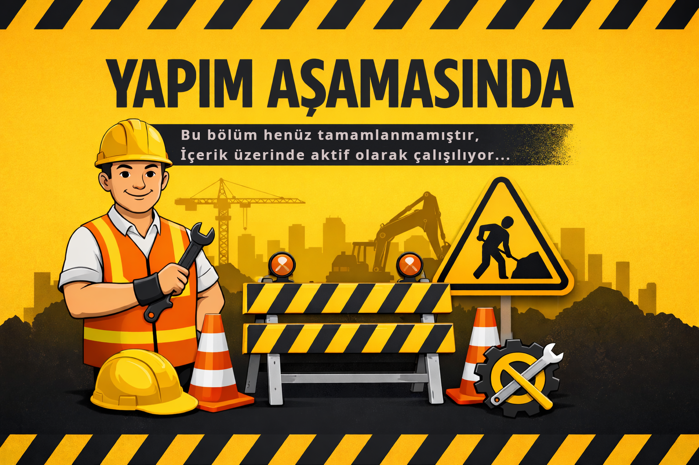